Home
ABHOR
(ab HOR) v.
to hate very much, to detest utterly
Link: CHORE
“The Booker boys ABHORRED doing CHORES.”
To ABHOR insects is to find them ABHORRENT.
It is generally believed that most women have an ABHORRENCE of mice.
It is a fact that most people ABHOR the thought of public speaking.
ABOMINATE
(uh BOM uh nate) v.
to dislike strongly, to regard with
intense aversion or loathing
Link: A BOMB HATE
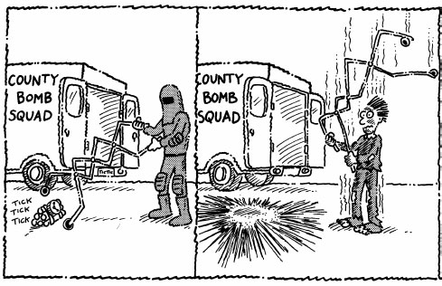
“I ABOMINATE BOMBS.”
David ABOMINATES vegetables. He doesn’t even want them on his dinner plate.
Sylvia ABOMINATED her relatives when they came to visit and tracked mud on her new white carpet.
Sam loves traveling with his family to the mountains for vacation each year, but he ABOMINATES the twelve hour drive.
ABRIDGE
(uh BRIJ) v.
to shorten; to condense;
to diminish; to curtail
Link: BRIDGE

“An ABRIDGED BRIDGE”
If you don’t want to read an entire newspaper to learn the latest daily news, there are clipping services that will ABRIDGE news stories to your specifications.
An ABRIDGED dictionary is one that has been shortened.
We saw an ABRIDGEMENT of the movie Gone With the Wind on TV last night; it only lasted two hours whereas the original lasted four.
ABSTRUSE
(ab STROOS) adj.
hard to understand
Link: MOOSE
“His friends consider Mike, the MOOSE, to be very ABSTRUSE.”
Chemistry is an ABSTRUSE subject of study for many students.
The scientists had many ABSTRUSE theories about atomic interactions.
Elizabeth’s directions to the party were very ABSTRUSE.
ABUT
(uh BUT) v.
to border upon; to adjoin
Link: BUTT
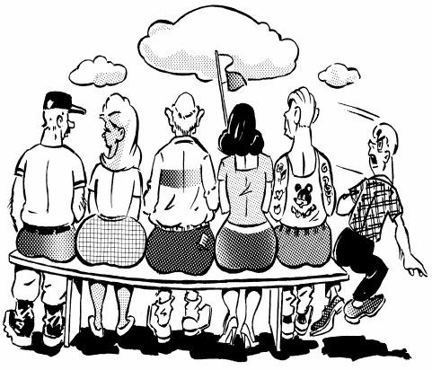
“ABUTTING BUTTS”
In Hong Kong the skyscrapers so closely ABUT each other, in some cases they touch sides.
Texas ABUTS Mexico on its southern border.
The ABUTTING rocks formed a perfect wall for riflemen to defend the castle.
ABYSS
(uh BISS) n.
bottomless pit; a yawning gulf;
a profound depth or void
Link: MISS
“The diver MISSED the ledge and sank deep into the ABYSS.”
The lost spaceship wandered aimlessly in the vast ABYSS of the galaxy.
After the rescuers dug without success for three days through the snow of the avalanche in search of the missing skier, they were disheartened and faced an emotional ABYSS of despair.
Staring down the ABYSS of the mine shaft we were uncertain of how deep it really was.
ACCOLADE
(AK uh layd) n.
an award, an honor; approval, praise
Link: LEMONADE
“Jane and Jack received ACCOLADES for their LEMONADE.”
Laura received ACCOLADES from her parents when she brought home her report card with straight As.
The ACCOLADES she received for making the varsity swim team quickly went to her head.
After running in his first marathon, Mike said he didn’t do it for the ACCOLADES, he just wanted to get back in shape.
ADJUNCT
(AJ unkt) n.
something connected or added to another
in a subordinate position; an assistant
Link: ADD JUNK
“The tank driver ADDED JUNK as an ADJUNCT to his tank.”
Hang gliding is only an ADJUNCT to Roseanna’s real love, which is skydiving.
The library was an ADJUNCT to the Blakemores’ original home.
The general’s adjutant was not an ADJUNCT, but a permanent part of his staff command.
AFFIDAVIT
(af uh DAY vit) n.
a sworn written statement
Link: AFTER DAVID
“AFTER DAVID slew Goliath, he made out an AFFIDAVIT not to further hurt any big guys.”
The defense lawyer had a sworn AFFIDAVIT from witnesses claiming his client was innocent of the crime charged against him.
Roseanne had an AFFIDAVIT from her neighbor giving her permission to cut down the tree on their mutual property line.
The chairman accepted an AFFIDAVIT from the claimant, who was too ill to appear before the county commission.
AFFINITY
(uh FIN uh tee) n.
a natural attraction; kinship; similarity
Link: FIN TEA
“The Chinese have an AFFINITY for shark fin soup and shark FIN TEA.”
Max had an AFFINITY for sports and excelled at football, basketball, and tennis.
Monkeys have an AFFINITY for climbing, birds for flying, and fish for swimming.
A natural AFFINITY exists between monkeys and apes.
AFTERMATH
(AF tur math) n.
events following some occurrence;
a consequence of
Link: AFTER MATH
“AFTER doing the MATH for calculating the atomic bomb, Einstein would live to see the resulting AFTERMATH.”
Poverty and economic depression are usually the AFTERMATH of wars.
An AFTERMATH of the bombing of Hiroshima was thousands of cancer cases caused by radiation.
The AFTERMATH of Christina skipping classes too often to practice ballet was flunking her classes.
AGGRANDIZE
(uh GRAN dize) v.
to increase in size; enlarge, to cause
to appear greater in power, influence
Link: GRAND EYES
“Ladies acquire GRAND EYES with mascara and false eyelashes to AGGRANDIZE their eyes.”
To AGGRANDIZE his achievements Richard would make up unbelievable stories of personal accomplishments.
The greatest AGGRANDIZEMENT of the entire evening was when the Russian claimed that Russia had won World War II without any help from the United States or the other allies. (n.)
Mario AGGRANDIZED his wealth by borrowing so much money and buying extravagant homes, cars, and boats that it eventually bankrupted him.
AJAR
(uh JARR) adj.
partially open
Link: JAR
“Hey, the JAR’S AJAR; we’re outta here.”
When the police carefully examined the crime scene, they found a window had been left AJAR.
I couldn’t set our home security system because the back door was left AJAR.
By leaving the front door of the house AJAR, hundreds of mosquitoes kept me awake all night long.
ALIENATE
(AY lee uh nate) v.
to make hostile; to cause to feel
unwelcome or estranged
Link: ALIEN ATE
“The chief ALIEN ATE all the ice cream and ALIENATED his crew.”
The boss ALIENATED his secretary by shouting at her when she made a mistake.
The kicker felt ALIENATED from the rest of the team after he missed a possible game winning field goal.
Barb was ALIENATED from her group when they learned that she was the town gossip.
ALLEVIATE
(uh LEE vee ayt) v.
to make less severe;
to relieve, to lessen
Link: LEAVES ATE
“The natives believed if they ATE the LEAVES of some trees it would ALLEVIATE many illnesses.”
When Peter arrived with sacks of ice for the party, it ALLEVIATED the need to wait for the icemaker to produce more.
When the team stopped for lunch, our coach ALLEVIATED the need for the waitress to bring separate checks when she offered to pay for all of us as a gesture of congratulations for our victory.
Aspirin ALLEVIATES painful headaches most of the time.
ALLURE
(uh LUHR) v.
to entice with something
desirable; to tempt
Link: LURE
“Not all fish LURES ALLURE all fish.”
The actress ALLURED the crowd with her overwhelming beauty.
The sailors were ALLURED into believing that the calm, balmy seas would never become a ferocious storm.
ALLURED by the thought of wealth, he decided to study plastic surgery.
ALOOF
(uh LOOF) adj.
distant, reserved in
manner; uninvolved
Link: ROOF
“The cat is so ALOOF, when guests come she hides on the ROOF.”
Most everyone thought Theodore ALOOF when actually he was only very shy.
Nothing ruins a fine dinner at a good restaurant like an ALOOF waiter who makes the entire experience uncomfortable.
At the wedding reception, the bride’s relatives were very ALOOF, hardly speaking to the groom’s guests and family.
ALSO-RAN
(AWL so ran) n.
one who is defeated in a race,
election, or other competition; loser
Link: AWESOME FAN
“The tortoise was an ALSO-RAN until he strapped on an AWESOME FAN.”
Even though Mitt Romney received millions of votes in the presidential election, he was an ALSO-RAN to Barack Obama.
With twenty thousand runners in the New York Marathon, even if you come in second place, you would still be an ALSO-RAN.
Tired of always being an ALSO-RAN, Mike trained hard and finally won the annual club tennis tournament.
ALTERCATION
(all tur KAY shun) n.
a heated quarrel
Link: ALTAR
“An ALTERCATION at the wedding ALTAR”
The Mafia had a slight ALTERCATION with the police, and ten gang members were arrested and booked in downtown Manhattan.
Patrick got into several ALTERCATIONS with the soccer coach this season.
When the pitcher hit the batter with a fastball an ALTERCATION soon broke out between both teams.
ALTERNATIVE
(awl TUR nah tiv) n.
the choice between two mutually exclusive
possibilities, a situation presenting such a choice
Link: TURN NATIVE
“It’s an ALTERNATIVE life style; he TURNED NATIVE.”
“I’ve had six by-pass operations,” said Harry. “It’s no fun, but better than the ALTERNATIVE.”
The ALTERNATIVE to playing in the band was to go out for the football team.
The hikers decided there was no ALTERNATIVE; they had to find shelter before the rains came.
AMBIANCE
(AM bee uns) n.
mood, feeling; general atmosphere
Link: AMBULANCE
“George did not enjoy the AMBIANCE in the AMBULANCE.”
The AMBIANCE of the locker room after the team lost the championship was depressing.
For their daughter’s birthday party, the Jeffersons created an AMBIANCE of gaiety, decorating the garden with bright balloons and ribbons.
The AMBIANCE in the Italian restaurant was delightful; there was soft music, candlelight, and singing waiters.
AMENABLE
(uh MEE nuh bul) adj.
agreeable, responsible to authority, pleasant,
willing to give in to the wishes of another
Link: MEAN BULL
“The matador tried to be AMENABLE to the MEAN BULL.”
Jack was such a classy guy, always AMENABLE to any reasonable solution to a problem.
The AMENABLE young man helped the old lady carry her groceries to her car.
Sarah was AMENABLE to calling back tomorrow when the office would be open.
AMPLIFY
(AM pluh fie) v.
to make larger, louder, or more powerful
Link: ANTS AND FLIES

“Dr. Frankie AMPLIFIED the ANTS AND FLIES to a monstrous proportion.”
The music was AMPLIFIED to the point where the guests couldn’t hear themselves speak.
General Rommel was unable to AMPLIFY the role of his tank corps in the battle of El Alamein because he didn’t have fuel to run them.
Some actors attempt to AMPLIFY their roles by upstaging their fellow actors.
ANTECEDENT
(an tuh SEED unt) n.
going before; preceding; an occurrence
or event preceding another
Link: HAND SEED
“The HAND that plants the SEED is the ANTECEDENT to the hand that picks the flower.”
The steam engine was the ANTECEDENT of the gasoline engine.
Your ancestors were your ANTECEDENTS.
The atomic bomb was the ANTECEDENT of the hydrogen bomb.
ANTERIOR
(an TEER ee ur) adj.
situated in front
Link: ANTLERS
“The ANTERIOR position of a deer’s ANTLERS comes in very handy.”
There is the ANTERIOR up front, the interior inside, the exterior outside, and the posterior bringing up the rear.
Susan prefers to sit in the ANTERIOR desk of the classroom in order to better see the board.
The ANTERIOR position of a ship is called the bow.
APPALLING
(uh PAWL ing) adj.
filling with dismay; causing
horror or consternation
Link: FALLING
“Sue had an APPALLING dream that she was FALLING.”
It was absolutely APPALLING the way Jews were treated in Nazi Germany during World War II.
The travelers received an APPALLING reception at the village hotel; they were given the smallest rooms for the highest prices.
Karen had an APPALLED look on her face after seeing the destruction the hurricane had caused to her house.
APTITUDE
(AP tuh tude) n.
capacity for learning; natural ability
Link: ALTITUDE
“Birds have an APTITUDE for ALTITUDE.”
Chris has had a champion’s APTITUDE for tennis since she was four years old.
Jess is all thumbs and has no APTITUDE for fixing things around the house.
Laura has an APTITUDE for numbers; ever since she was young she always received high marks in math class.
ARCHAIC
(ahr KAY ik) adj.
belonging to an earlier
time, ancient; outdated
Link: CAKE
“An ARCHAIC CAKE”
Her parents had an absolutely ARCHAIC idea of dating. She not only had to be in by nine o’clock, but her aunt chaperoned her on all her dates.
ARCHAIC civilizations, those that aren’t around anymore, are the chief subject of archaeological studies.
Underdeveloped countries that depend on agriculture for their economy will never raise their standard of living as long as they use ARCHAIC farm tools.
ARDUOUS
(AHR joo us) adj.
hard, difficult, tiresome
Link: HARD ON US
“The ARDUOUS snow-covered trail is HARD ON US.”
The assignment given the recruits was an ARDUOUS twenty mile hike with full packs in the hot sun.
Swimming three miles was the most ARDUOUS exercise Jeannie ever had.
The long, ARDUOUS boat trip was made even worse by stormy seas and much seasickness.
ARTISAN
(AHR tih sun) n.
a worker skilled in a craft
Link: ART IN SAND
“Little Jimmy was a SAND CASTLE ARTISAN.”
The ARTISANS of Pueblo, Mexico are known for their beautiful pottery.
The ARTISANS arrived early in the morning to repaint and landscape the house.
The Italian painter and sculptor Michelangelo was both an artist and an ARTISAN.
ASKEW
(uh SKYOO) adj.
to one side; crooked; awry;
sidelong look of contempt
Link: CUE
“Curly’s pool CUE had become ASKEW.”
After the flood receded, the bridge was found to be ASKEW of the road which connected to it.
The tire wouldn’t fit on the car because in the accident the axle had been bent ASKEW.
The speaker looked ASKEW at the heckler at every interruption.
ASPIRE
(uh SPIRE) v.
to seek, attain, or achieve a goal
Link: RETIRE
“Jim ASPIRED to RETIRE early and become a man of leisure.”
Tim ASPIRED to be the valedictorian of his class at graduation and studied hard to reach that goal.
The counselor told Jim’s parents that his problem in school was he didn’t ASPIRE to anything. He had no goals or career direction.
As a young child, General Custer had ASPIRED to become a musician, but later decided to become a general instead.
ASSUAGE
(uh SWAYJ) v.
to soothe; to make less severe;
to satisfy, ease, lessen
Link: MASSAGE
“A good MASSAGE is known to ASSUAGE sore muscles and relieve uptight feelings.”
When Jane double faulted on match point, her coach came to her side and tried to ASSUAGE her disappointment by telling her she had played a great tournament, and that no one is perfect.
Dr. Moore was able to ASSUAGE the fear of his patient by predicting successful treatment.
Many athletes drink sport drinks to ASSUAGE their thirst.
ASTUTE
(uh STEWT) adj.
quick in discernment; shrewd, clever, keen
Link: SUIT
“Larry thought a new SUIT would make him appear more ASTUTE for his job interview.”
Louisa has a natural ASTUTENESS in dealing with angry people and winning them over to her view, thereby settling matters amicably. (n.)
Like many gamblers, John thought he was very ASTUTE when it came to betting on horses. Only his wife kept telling him if he was so ASTUTE, he would realize he lost more often than he won.
Mary was known to be very ASTUTE. She was always the first to finish her assignments.
ASUNDER
(uh SUN dur) adj.
in separate parts; apart from
each other in position
Link: THUNDER

“The lightning and THUNDER tore the young lovers ASUNDER.”
When the earthquake stopped, and we came up from our shelter, we found the city had been torn ASUNDER and not one single building was left standing.
The ship was torn ASUNDER after hitting the reef.
The curtains had been drawn ASUNDER.
ATROPHY
(AT ruh fee) v.
to wither away
Link: TROPHY
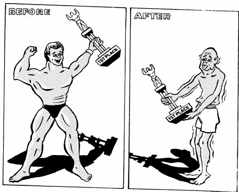
“Once a TROPHY champion, Jim’s muscles ATROPHIED due to a chronic illness.”
The author’s interest in writing ATROPHIED after he won the Pulitzer Prize for literature.
The ATROPHIC condition of the mummy was apparent as soon as the tomb was opened. (adj.)
The ATROPHIED bodies of the starving children were an appalling sight.
ATYPICAL
(ay TIP ih kull) adj.
not typical, abnormal
Link: TYPICAL
“Uncle Jeff’s old bicycle is not TYPICAL of bikes today; it is ATYPICAL.”
A banana without a curve in its length is ATYPICAL of the species.
His parents agreed it was most ATYPICAL of John to stay home and study Saturday night when he could have gone to the movies with his friends.
It was an ATYPICAL decision for our boss to give us the day off with pay.
AUSTERE
(aw STEER) adj.
stern, as in manner; without excess,
unadorned, severely simple and plain
Link: STEER
“An AUSTERE STEER is no fun at a party.”
Mike’s AUSTERE dorm room only had one chair and a mattress.
The AUSTERITY of life in the village was understandable. Many were jobless and evidence of poverty was everywhere. (n.)
Her home was AUSTERELY decorated, with very plain furniture without frills and only items that were necessary.
BADGER
(BAJ er) v.
to tease, annoy, harass persistently
Link: BADGER
“A BADGERING BADGER”
“Don’t BADGER me,” Louis said to his daughter. “I promised I’d take you to the mall, so please be patient until I finish my work.”
The school bully BADGERED Rog endlessly, until one day Rog became so provoked that he socked him in the mouth.
I hate to be BADGERED by phone solicitors.
BALLISTICS
(buh LISS ticks) n.
the study of the dynamics or flight
characteristics of projectiles
Link: LIPSTICK
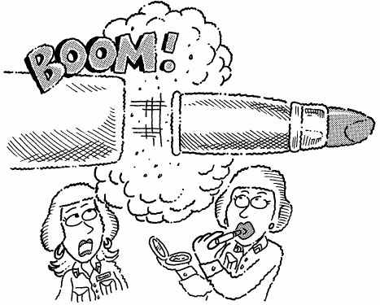
“BALLISTIC LIPSTICK”
BALLISTICS is a noun, while BALLISTIC is an adjective which means “of projectiles.”
Most naval warships carry BALLISTIC missiles. (adj.)
Detective Culleton specializes in BALLISTICS and is always called to a crime scene whenever a firearm is involved. (n.)
BALM
(balm) adj./n.
something that heals or comforts;
soothing; an oil or ointment
Link: PALM
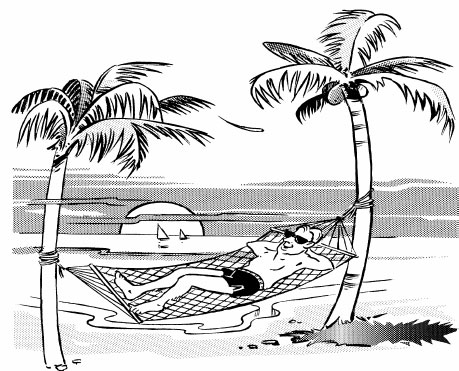
“There’s nothing like a BALMY breeze whispering through PALM trees.” (adj.)
The nurse gave me a white BALM to put on my insect bites to soothe the pain. (n.)
It was a BALMY day, perfect for a game of golf or a trip to the beach. (adj.)
After sweating through his final exams, the sound of the bell at the end of class was a BALM to Pete’s nerves. (n.)
BEGET
(bee GET) v.
to give birth to; to create
Link: FORGET
“The old lady who lived in the shoe BEGAT so many children she would FORGET who was who.”
Prior to the development of large farm machinery, farmers used to BEGET large families to help them run their farms.
Chronic lying becomes a habit which starts out with one small lie, which BEGETS a second lie, which BEGETS a third lie, and so on.
The Wright brothers didn’t invent the airplane, but they were the BEGETTERS of the first sustained flight in the United States. (n.)
BELEAGUER
(be LEE gur) v.
to besiege; beset, surround, harass
Link: BIG LEAGUER
“The little leaguers BELEAGUERED the BIG LEAGUERS.”
The home fans BELEAGUERED the visiting team as they entered the stadium.
The ship was BELEAGUERED by the constant attack of enemy fighter planes.
In the midst of important negotiations, the union official asked his staff not to BELEAGUER him with insignificant details.
BEREAVE
(bih REEV) v.
to deprive and make desolate, esp.
by death; to deprive by force
Link: LEAVE
“When Jimmy’s fish died and had to LEAVE, it BEREAVED him of his love of goldfish.”
The fast moving wildfire BEREAVED five families of their homes.
The assassination of John F. Kennedy by Lee Harvey Oswald BEREAVED a nation of their beloved president.
To BEREAVE a child of an education is a travesty.
BESET
(bee SET) v.
to harass; to surround
Link: BEES SAT
“The angry BEES SAT on his face and BESET the beekeeper.”
We were to have gone to the beach for a sunny vacation, but were BESET with a week of rain and cold weather.
We thought we had the design ironed out, but when three of our aircraft crashed, we knew we were BESET with design problems we had yet to understand.
The losing team was BESET with disappointment.
BIZARRE
(bih ZAR) adj.
extremely unconventional
or far-fetched
Link: BAZAAR
“You see some BIZARRE things for sale at a BAZAAR.”
Justin’s BIZARRE personality estranged him from rest of the group.
As the medication began to take effect, Randolph’s eyes took on a faraway look, and he muttered some BIZARRE nonsense about wanting to ride the pony one more time.
“Wasn’t he BIZARRE?” Lorna said of the strange man who appeared from nowhere and offered her an apple.
BLATHER
(BLA thur) v.
to talk nonsensically
Link: LATHER
“Karen and Allison BLATHERED until their mouths LATHERED.”
Everything the media reported about the supposed plane disaster never happened. It was a bunch of BLATHER by uninformed journalists.
Children have great imaginations, and often BLATHER about ghosts that supposedly enter their rooms and either scare them or play with them.
All Mary likes to do is BLATHER with her friends on the phone.
BLEAK
(bleek) adj.
depressing, discouraging,
harsh, cold, barren, raw
Link: LEAK
“Sometimes a simple LEAK can lead to BLEAK consequences.”
The game looked BLEAK with our team being down 42 to 7 in the fourth quarter.
The vet said we should keep our hopes up, but the chance of our dog, Spot, surviving the car accident appeared BLEAK.
The BLEAKNESS of the Aleutian Islands, where the winds howl constantly, makes one shiver just to see a picture of it.
BLUDGEON
(BLUD jun) v./n.
to hit or attack with heavy impact;
a short, heavy thick club that has
one end larger than the other
Link: DUNGEON
“Why do you suppose they have all these BLUDGEONS in this DUNGEON?” (n.)
There was nothing temperate about the lawyer’s summary to the jury; he BLUDGEONED them with all the gruesome details of the murder. (v.)
The detective suspected the murder weapon was some type of BLUDGEON. (n.)
The police arrested the lumberjack on suspicion of BLUDGEONING a co-worker with an axe handle. (v.)
BUCOLIC
(byoo KAHL ik) adj.
rural or rustic in
nature, country-like
Link: BULLS FROLIC
“BULLS FROLIC when a farm is BUCOLIC.”
The judges gave first prize to the painting of a BUCOLIC landscape in greens and blues.
There is nothing BUCOLIC about big city life; honking horns and bustling streets are neither peaceful nor rustic.
Mr. Pride’s farm, with its peaceful green pastures and a babbling brook, was the perfect BUCOLIC setting for a picnic.
BULWARK
(BULL wurk) n.
a defensive wall; something serving
as a principal defense
Link: BULL WORK
“BULLS WORK building a BULWARK”
Quebec City is the only city in North America with a BULWARK built entirely around it.
The budget for national defense is an economic burden for all taxpayers, but we must never forget our armed services are the BULWARK of defense for the nation.
Our mother was a BULWARK against bad times; no matter how bad things became she always wore a smile and had a cheerful word.
CACHE
(kash) n.
a hiding place, or the objects
hidden in a hiding place
Link: CASH
“The escaped prisoner recovered the CASH from his CACHE.”
Treasure hunters have searched for Blackbeard’s treasure in Bahamian caves, but no one has yet found his CACHE.
Mom found a CACHE of candy behind Laura’s bed. No wonder she doesn’t eat much dinner.
The police uncovered a CACHE of weapons and money at the gang’s hideout.
CACOPHONY
(kuh KAH fuh nee) n.
harsh sounds
Link: COUGH
“A CACOPHONY of COUGHING”
A CACOPHONY isn’t just noise, it is disturbing noise such as when people shout all at once.
Grandpa thinks all rock music is a CACOPHONY to be avoided whenever possible.
An unpleasant CACOPHONY of sound was produced as the orchestra tuned their instruments. But once they began to play together the sounds became euphonious.
CAJOLE
(kuh JOHL) v.
to wheedle, coax, or persuade someone
to do something they didn’t want to
Link: PAROLE
“Jimmy the Geek tried to CAJOLE the warden into giving him PAROLE.”
Allison CAJOLED me into entering the marathon just so she could get a free T-shirt.
Some of the younger Republicans were CAJOLED into voting for the Democratic candidate because he promised to lower the voting age.
Jeannie always sweet-talked and CAJOLED her parents into letting her have her way.
CALLOUS
(KAL us) adj.
unfeeling, insensitive
Link: CALLUS
“Jack was so CALLOUS, he called attention to Mike’s CALLUSES.”
A CALLOUS remark about someone does not take into consideration his or her feelings.
One is sometimes CALLOUS to people begging on street corners.
The CALLOUS movie star would not sign autographs or even acknowledge her fans.
CALLOW
(KAL oh) adj.
immature and inexperienced
Link: SHALLOW
“Our dad was so CALLOW he made his first dive in our SHALLOW kiddie pool.”
The CALLOW appearance of the troops he now inspected reminded General Troister that wars kill the youth of the nation, not the old politicians who start them.
The CALLOW boater did not have a life preserver, paddle, or radio onboard his sailboat.
CALLOW she was, but you never saw a more enthusiastic, hard working young lady at the glove factory.
CANDOR
(CAN dur) n.
truthfulness, sincere honesty
Link: CONDOR
“A CONDOR with CANDOR”
Speaking with CANDOR, the governor called for police reforms throughout the state.
Without regard to feelings, our teacher said she would criticize our term papers with absolute CANDOR.
The coach told his team that CANDOR means to speak honestly, and to speak CANDIDLY, the team stunk. (CANDID means showing CANDOR.)
CAPACIOUS
(kuh PAY shus) adj.
roomy, able to hold much
Link: CAP SPACIOUS
“A SPACIOUS CAP is CAPACIOUS.”
The old castle has a CAPACIOUS dining room large enough to seat a small army.
David’s memory for jokes is CAPACIOUS; he remembers them all.
Our bed at the hotel was really CAPACIOUS; all three sisters slept there.
CASTIGATE
(KAS tuh gate) v.
to criticize harshly, usually with the
intention of correcting wrongdoing
Link: PASSED THE GATE
“The gate attendant CASTIGATED Herman for PASSING THE GATE.”
The coach was CASTIGATED by the university’s administration for not recruiting football players in compliance with NCAA regulations.
Jimmy’s mother CASTIGATED him for tracking mud on their new living room carpet.
When CASTIGATED for behavior unbecoming of a naval officer, Chief Petty Officer Peterson was denied shore-leave.
CATAPULT
(KAT uh pult) v./n.
to launch; a device for
hurling objects, a slingshot
Link: CAT
“Testing the first CAT CATAPULT” (n.)
When the Dolphins beat the Steelers, the victory CATAPULTED them into first place. (v.)
The Atlas entry won at Indianapolis by drafting behind the lead car and CATAPULTING forward to take the lead at the finish line. (v.)
Before the invention of cannons, CATAPULTS were used by armies to attack castles and forts. (n.)
CATHARSIS
(kuh THAR sis) n.
an emotional or psychological
cleansing that brings relief or renewal
Link: CATS AND HORSES
“CAT AND HORSE CATHARSIS”
Psychologists now know that the companionship of domesticated pets can lead to a CATHARSIS for mentally disturbed patients.
After Jeremy returned to the French World War II battlefield he had known fifty years before, he said he found the experience CATHARTIC. (adj.)
Getting out of the city and going to the mountains is Chuck’s annual CATHARSIS.
CAUCUS
(KAW kus) n.
a meeting of the members of a
political party to make decisions
Link: CACTUS
“A CACTUS CAUCUS”
A congressional Hispanic CAUCUS was formed to address issues that might affect their constituents.
Some delegates to political conventions are selected in CAUCUSES, while others are appointed.
During the monthly CAUCUS, the senator from Florida brought up the issue of runaway insurance rate hikes.
CEREBRAL
(suh REE brul) adj.
of or relating to the
brain or the intellect
Link: CEREAL
“Eat your CEREAL so you’ll grow up and be CEREBRAL like your father.”
Newsweek is a more CEREBRAL magazine than People.
Dr. Clark was too CEREBRAL to be a boy scout leader. Instead of saying “Pitch your tents over by the cliff,” he would confuse everyone with his big words and say, “Construct the canvas shelters in the proximity of the promontory.”
The CEREBRAL young man received a perfect score on his SAT test.
CERTIFY
(SUR tuh fie) v.
to confirm formally; verify
Link: HURT A FLY
“George Washington never told a lie, and he would CERTIFY that he never HURT A FLY.”
The valuable papers arrived by CERTIFIED mail. (adj.)
In front of the entire commission, Jane was asked to CERTIFY she could prove her accusations.
Jack was a CERTIFIABLE liar and crook, wanted in many countries by the authorities. (adj.)
CHASM
(KAZ um) n.
a deep opening in the earth’s surface; a gorge;
differences of opinion, interests, loyalties
Link: SPASM
“A SPASM above the CHASM”
“There are CHASMS and there are CHASMS,” said the professor. “The Grand Canyon is one big CHASM, but I fear some of you have CHASMS between your ears.”
There was a CHASM of difference between their attitudes of what a marriage should consist of.
We crossed the huge CHASM on a flimsy rope bridge.
CHATTEL
(CHAT ul) n.
an item of personal,
movable property; slave
Link: CATTLE
“Tex’s CATTLE were his CHATTEL.”
The bank held a CHATTEL mortgage on all our office equipment, chairs, computers, and even our electric clock.
Please do not order me around, Lady Boswell, I am neither your servant nor your CHATTEL.
The CHATTEL belonging to Herodotos of Athens at his death were sixteen slaves, seven horses, six hunting dogs, and three dwarf gladiators.
CHIDE
(chide) v.
to scold; to voice disapproval
Link: LIED
“The good fairy CHIDED Pinocchio because he LIED.”
When Bobby threw his toys against the wall, his father CHIDED him for his bad temper.
I don’t mind being CHIDED for things I did, but I hate being CHIDED for what my sneaky sister Elizabeth did.
The sergeant told the private that he was going to CHIDE him each time he didn’t properly clean his rifle.
CHRONIC
(KRAHN ik) adj.
continuing for a long time; continuous
Link: RON’S HIC
“RON’S HICcups were CHRONIC.”
George was a CHRONIC complainer, he never saw the positive side of anything.
When lower back pain becomes CHRONIC, it’s time to see a doctor.
Her CHRONIC gossiping led to her being kicked out of the garden club.
CIRCA
(SUR ka) prep.
at, in, or of approximately; at an
estimated historical time period
Link: CIRCUS
“The first known CIRCUS took place CIRCA 200,000 BC.”
The exact date of the first Egyptian dynasty is not known, but it is believed to have occurred CIRCA 3000 BC.
CIRCA is another word for “about” or “more or less,” and always refers to a passage of time.
John is an expert on weapons produced CIRCA 1800.
CITADEL
(SIT uh dl) n.
a fortress overlooking
a city; a stronghold
Link: SIT WELL
“It pays to SIT WELL on the edge of a CITADEL.”
Charlie was a CITADEL of strength, always there for you no matter what.
West Point is considered a CITADEL of military learning, a fact easily understood when you come to understand that most generals attended West Point.
There are many ancient CITADELS in Spain; they are among the attractions most visited by tourists.
CLAIMANT
(KLAY munt) n.
a person making a claim
Link: CLAIM ANT
“A CLAIMANT CLAIMING ANTS”
The CLAIMANT of the Virginia City silver mine was Scott “Wormy” McClennahan, a miner.
The judge awarded all six of the CLAIMANTS an equal share of the insurance money.
Rosalie not only wanted the house in her divorce from Robert, but she was also the CLAIMANT of his art collection.
CLOISTER
(KLOY stur) n./v.
a tranquil, secluded place
Link: OYSTER
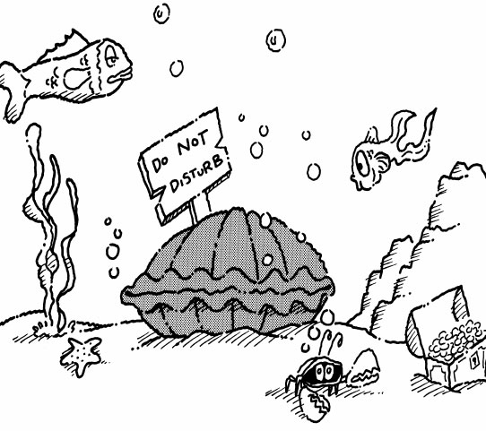
“An OYSTER in his CLOISTER” (n.)
Mary regarded her sewing room as a CLOISTER where she could withdraw from her hectic life as a mother of six and enjoy moments of privacy. (n.)
(To CLOISTER someone is to place them in a place of seclusion, although they may or may not be in the company of others.) Jim CLOISTERED himself in his hotel room for the entire week of his vacation. (v.)
COMMODIOUS
(kuh MOH dee us) adj.
spacious, roomy, capacious
Link: COMMODE
“A COMMODIOUS COMMODE”
The rooms in the castle were so COMMODIOUS that they were as large as the average home.
The COMMODIOUS limousine accommodated the entire family and our luggage.
In Hong Kong, the government has built several million apartments for the working class in recent decades. Compared to western standards, they are not very COMMODIOUS, only about half the size of a small, two-bedroom apartment in the United States.
COMPRISE
(kum PRIZE) v.
to consist of; to include, to
contain, to be made up of
Link: SURPRISE
“It was not a pleasant SURPRISE when the pirates discovered their treasure COMPRISED of party favors.”
If we had one more kitten in the house, the litter would COMPRISE thirteen.
A basketball team COMPRISES five players and any number of substitutes the coach wants to allow on the team.
The first aid kit COMPRISED of a bottle of aspirin, two gauze pads, and a pair of scissors.
CONGENIAL
(kun JEEN ee ul) adj.
pleasant to be around;
social, agreeable
Link: JEANS
“Folks in JEANS are very CONGENIAL.”
The CONGENIAL Dr. Armstrong always had a smile and a kind word for his patients, and candies for the children.
David’s CONGENIAL personality made it easy for him to make friends.
The atmosphere at the property appraiser’s office is CONGENIAL. Everyone enjoys their job, and visitors are welcome at any time.
CONNOISSEUR
(kahn uh SUR) n.
an expert, particularly in
matters of art and taste
Link: KING OF SEWER
“The KING OF the SEWER is a CONNOISSEUR of garbage.”
My uncle is a CONNOISSEUR of fine wines.
Art dealer, Jorge Guizar, is a CONNOISSEUR of Mexican art of the 19th century.
When it came to coins, Jerry proclaimed he was a CONNOISSEUR, because he had collected them all his life.
CONSENSUS
(kun SEN sus) n.
general agreement
Link: SENDS US
“We are in CONSENSUS, this guy SENDS US.”
The family CONSENSUS was to celebrate Christmas at Aunt Karen’s house this year.
The CONSENSUS of the faculty was that no more chili dogs were to be served at the school lunch.
A CONSENSUS is more than a majority, it means most everyone agrees.
COTERIE
(KOH tuh ree) n.
a circle of close associates or friends
Link: COAT FOR THREE
“The maestro and his COTERIE in a COAT FOR THREE”
Today’s tennis stars rarely travel alone, but with a COTERIE of managers and coaches.
Rock stars have a COTERIE of fans who follow them around like leeches.
His films are admired by a small COTERIE of critics.
COUNTENANCE
(KOWN tuh nunz) n.
a person’s face, especially the expression
Link: COUNT THE NUTS
“By their facial COUNTENANCE alone it was easy to COUNT THE NUTS.”
The submarine commander’s COUNTENANCE belied his true feelings of anxiety and fear.
John Barrymore had a magnificent series of COUNTENANCES, one for every role he played.
(To COUNTENANCE something is to tolerate or approve of it.) The coach COUNTENANCED the players’ horse play, even though he didn’t approve of it.
COUP
(koo) n.
the violent overthrow of a government by a
small group; a victorious accomplishment
Link: CREW
“In a midnight COUP, the mutinous CREW of ‘The Bounty’ threw Captain Bligh off his ship.”
In this century alone there have been almost one hundred military COUPS in Latin America.
It was a real COUP for James when his teammates elected him captain of the basketball team.
The violent COUP ended when the radical political leaders were escorted out of the capitol in shackles.
COUTURE
(kuh TOUR) n.
fashion designs; clothes
created by fashion designers
Link: FUTURE
“That’s what we’ll be wearing, the COUTURE of the FUTURE.”
Jane works for a department store chain and they sent her to Paris to study the latest COUTURE.
Henry studied the art of COUTURIER for three years in the finest French design institutions.
The fashion model walked the runway wearing the latest COUTURE.
COWER
(KOW ur) v.
to cringe in fear; to shrink away
Link: COW
“Bessie, the COWERING COW, never could stand the sight of her own milk.”
When Sheriff Wild Bill Hickok entered the Last Chance Saloon, the villains COWERED in fear.
The sound of the rusty door opening in the middle of the night made Sue COWER under her sheets.
Jack COWERED in frustration just to think about coming home from vacation and finding all the homework he had to catch up on.
CRANNY
(KRAN ee) n.
a small opening as in a wall or rock face
Link: GRANNY
“GRANNY got stuck in the CRANNY.”
The secret message was found stuffed into a small CRANNY in the courtyard wall next to the church.
Rock climbers look for any CRANNY where they can get a secure foothold.
We searched the house from top to bottom and never overlooked a single nook or CRANNY.
CRAVEN
(KRAY ven) adj.
lacking the least bit of courage;
cowardly
Link: RAVEN
“A CRAVEN RAVEN on the run”
The soldier was full of bluster about how bravely he would fight, but his comrades later found him to be CRAVEN once the battle started.
To let his wife do his fighting for him was the act of a CRAVEN husband with no backbone.
The CRAVENLY act of the assassin, John Wilkes Booth, led to the death of President Lincoln.
CREDITOR
(KRED ih ter) n.
a person or entity to whom money is owed
Link: PREDATOR
“Beware the CREDITOR who is a PREDATOR.”
Mr. Randolph’s lawyer recommended he declare bankruptcy; he had too many CREDITORS and not enough assets with which to pay.
CREDITORS usual charge interest on the money they loan.
Visa, Master Card, and American Express companies are CREDITORS.
CRITERION
(kry TEER ee un) n.
a standard or rule by which something
can be judged; a basis for judgment
Link: LIBRARIAN

“A CRITERION for any LIBRARIAN is that she must know how to read.”
There is no special CRITERION for making a fortune, but some say the fastest way is to marry rich.
(CRITERION is singular. CRITERIA is plural.) The physical CRITERIA for a good basketball player are to be seven feet tall and jump like a kangaroo.
The CRITERION for becoming a lawyer is graduating from law school and passing the state bar exam.
CUBISM
(KYOO biz um) n.
a style of art in which the subject matter is
portrayed by geometric forms, especially cubes
Link: CUBES
“By the look of these CUBES, you are an artist of the school of CUBISM.”
CUBISM is a style of art that stresses abstract structure at the expense of other pictorial elements by fragmenting the form of those objects that are to be depicted.
Pablo Picasso did not originate CUBISM, but he is credited with popularizing it.
By the design of the new building you can tell the architect was partial to CUBISM.
CURTAIL
(kur TALE) v.
to truncate or abridge; to lessen,
usually by cutting away from
Link: CAT TAIL
“Rex readies himself to CURTAIL the CAT’S TAIL.”
The chairman requested that we should CURTAIL any further discussion of women’s rights until the women arrived.
Sheriff McDougall CURTAILED all further night patrols east of the river until bullet-proof windows were installed in his patrol cars.
Mike’s knee injury CURTAILED his career as a professional football player.
CURVILINEAR
(kurv ah LIN ee ur) adj.
formed, bound, or
characterized by curved lines
Link: CURVY LINES
“The skater’s CURVY LINES outlined her CURVILINEAR skating program.”
Squares and rectangles have no CURVILINEAR lines.
Engineers have special instruments to lay out CURVILINEAR streets in subdivisions.
The CURVILINEAR shape of sports cars makes them more aerodynamic, which gives them less drag and allows them to travel faster.
DAMPER
(DAM pur) n.
one that depresses or restrains;
a dulling or deadening influence
Link: DAMP PAW
“A DAMP PAW can put a DAMPER on a good time.”
The jury trial seemed to be going the way of the defense until an eyewitness put a DAMPER on the defendant’s hopes by identifying him as the one who committed the crime.
The family was excited about their vacation until their father put a DAMPER on their plans, saying he was sorry, but there was no money for a vacation this year.
The unexpected rain put a DAMPER on plans to have a picnic at the beach.
DAUNTLESS
(DAWNT lis) adj.
fearless; unintimidated
Link: HAUNTLESS

“The DAUNTLESS ghostbusters render a haunted house HAUNTLESS.”
DAUNTLESS and determined, the firemen dashed through the smoke to rescue the family trapped in the fire. UNDAUNTED by the flames, they stayed until everyone had been rescued. (DAUNTLESS and UNDAUNTED mean the same thing.)
The hikers were UNDAUNTED by the steepness of the mountain; however, they decided to turn back when a storm appeared in the distance.
The DAUNTLESS soldier attacked the enemy line with no regard to the machine gun fire and mortar rounds exploding all around him.
DEARTH
(durth) n.
scarcity; lack
Link: EARTH
“There is a DEARTH of EARTH in the middle of the ocean.”
A DEARTH of rain last summer led to many failed crops, especially corn and cotton in the valley.
This Broadway season was the poorest in years. Critics say this was largely due to a DEARTH of good playwrights.
There always seems to be a DEARTH of cookies in the cookie jar after our granddaughter’s visit.
DEBACLE
(dih BAH kul) n.
a sudden calamitous downfall;
collapse or failure
Link: THE BUCKLE
“When THE BUCKLE broke, Shakespeare's Hamlet became a DEBACLE.”
After winning our first game we went on to lose nine straight. What a DEBACLE.
The financial DEBACLE that was the stock market of 1929.
The Watergate scandal was the DEBACLE of the Nixon presidency.
DEBASE
(dih BAYS) v.
to lower in quality, character, or value
Link: THE BASE
“Big Bertha easily DEBASED THE BASE.”
Inflation in Brazil has DEBASED the value of money so much that people won’t stoop to recover small coins in the street.
The judge sued the newspaper for DEBASING his character in an article claiming he was too easy on criminals.
Violent crime in America DEBASES our country.
DECREE
(dih KREE) n.
an order having the force of law
Link: SET FREE
“The governor DECREED that all the prisoners be SET FREE.”
The DECREE by the city council that all dogs must be kept on a leash set off a bitter conflict among dog owners.
In Dodge City, during the days of the great cattle drives of the 1880s, Sheriff Wyatt Earp enforced the DECREE that all guns must be turned over to the sheriff’s deputies before a man could ride into town.
Avid smokers protested the DECREE which prohibits smoking in all restaurants and public buildings.
DEDUCE
(dee DOOS) v.
to come to a conclusion by
reasoning from the evidence
Link: MOOSE
“Marvin the MOOSE wondered why Elsie the cow couldn’t DEDUCE that he was a MOOSE.”
When the doors to the living room were locked the day before Christmas, Peggy DEDUCED her mother was wrapping presents and didn’t want to be disturbed.
From the footprints in the snow, we DEDUCED that the missing hikers had wandered in circles several days before disappearing entirely.
The detective DEDUCED that the killer’s weapon was a knife based on the wounds left on the victim.
DEFAME
(dih FAYM) v.
to libel or slander; take away a good name
Link: RENAME
“When the good name of William Bonney was DEFAMED, reporters RENAMED him ‘Billy the Kid’.”
DEFAMED and defeated, Napoleon was exiled to the Island of Elba.
False accusations by lying men have DEFAMED the reputations of many reputable women.
Thomas Jefferson was once quoted as saying, “DEFAMATION is becoming a way of life insomuch that a dish of tea cannot be digested without the stimulant.”
DEFT
(deft) adj.
skillful, dexterous
Link: DEAF
“The DEAF are DEFT at reading lips.”
The quarterback DEFTLY avoided the linebacker’s rush while calmly throwing a touchdown pass.
In one DEFT move, the policeman subdued the thief and took him to the ground.
The magician was so DEFT with a pack of cards that he could deal off the bottom with everyone watching, and no one was the wiser.
DEMAGOGUE
(DEM uh gawg) n.
a leader who obtains power by appealing to
the emotions and prejudices of the people
Link: THEM DOGS
“THEM DOGS, Hitler and Mussolini, were infamous DEMAGOGUES.”
Historians will almost exclusively agree that Hitler and Mussolini were DEMAGOGUES who were greatly responsible for starting World War II. (DEMAGOGUES are leaders, but not in a positive way.)
Lawyers, politicians, and other authority figures who inflame the populace to further their own aims are said to be DEMAGOGUES who engage in DEMAGOGUERY.
DEMONIC
(dee MON ik) adj.
one who works devilishly (a demon for work),
having a persistent force or drive; fiendish
Link: DEMON
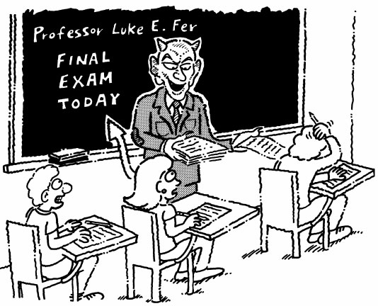
“Professor Luke E. Fer was a DEMONIC DEMON when it came time for his final exams.”
Walter had a DEMONIC approach to business; he was only out there for himself and the money.
In pursuit of an Olympic medal, Jack’s practice habits were DEMONIC; six hours a day on the track was his norm.
To have a DEMONIC attitude in attempting to achieve your goals will sooner or later pay off.
DEMUR
(dih MYOOR) v.
to object, to make exception
Link: PURE
“Cinderella was so PURE she DEMURRED even when offered a root beer.”
Billy DEMURRED when his friends wanted him to run for class president.
The mayor said he would DEMUR if asked to speak at the town rally.
Nancy DEMURRED when Henry suggested she should share her lunch with him and his six friends.
DENOUNCE
(dih NOWNS) v.
to condemn; to expose critically
Link: BOUNCE

“The other kangaroos DENOUNCED poor Roger when he was unable to BOUNCE.”
At the press conference, the irate coach DENOUNCED the referees for all the bad calls he thought he had received.
The captured soldiers were asked to DENOUNCE their government and join in the revolution of the people.
The world was flabbergasted with the Russian government’s DENUNCIATION of Stalin so soon after he died.
DESICCATE
(DES ih kayt) v.
to dry out completely; dehydrate
Link: THIS DRY CAKE
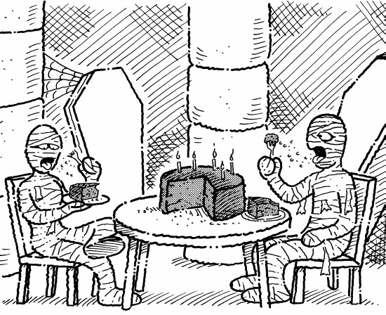
“THIS DRY CAKE has DESICCATED.”
The drought was the worst in fifty years, and the oranges on the trees were DESICCATED.
The whale carcasses cast upon the beach had begun to DESICCATE by the time the marine biologist arrived at the scene.
Raisins are grapes that have been shrunk and dried through a process of DESICCATION.
DILEMMA
(dih LEM uh) n.
a difficult situation where one must choose between
two or more choices that seem unfavorable; any
problem or predicament
Link: LIMB
“The DILEMMA facing Jake was to go over the waterfall or to grab the LIMB.”
John faced the DILEMMA of either taking a cut in pay or losing his job.
Helen was on “the horns of a DILEMMA.” She had to move with her family to another town and lose a semester in school or stay by herself until summer.
It was a small DILEMMA, but Bill couldn’t choose between pecan or cherry pie for dessert.
DISPARAGE
(dis PEAR ij) v.
to belittle, say uncomplimentary
things; to put down
Link: CARRIAGE
“The mean stepmother DISPARAGED Cinderella’s CARRIAGE.”
Pete was told his behavior would DISPARAGE the whole team’s efforts.
The coach DISPARAGED his team to the press after a humiliating loss.
Jealousy made Ellen make many DISPARAGING remarks about Rachel’s prom dress.
DISPEL
(dis PELL) v.
to drive away; to dissipate
Link: SPELL
“The princess kissed many toads before she could DISPEL the witch’s SPELL on the prince.”
After the crowd had been DISPELLED from the scene of the accident, the wreckers hauled away the tangled, wrecked automobiles.
The professor told his student he wanted to DISPEL any thoughts she might have of receiving a better grade than she deserved just because he was a good friend of the family.
My parents told us to DISPLEL any notions of inviting a bunch of friends over to the house and having a wild party while they were gone for the weekend.
DISPERSE
(dis PURS) v.
to scatter in various
directions; distribute widely
Link: PURSE
“When the thug grabbed Dee’s PURSE, all its contents were DISPERSED.”
Bonaparte DISPERSED his troops strategically all along the mountain’s ridge where they could fire down upon the advancing Austrian Army.
The police arrived to DISPERSE the raging crowd with threats of arrest if they did not leave the parade grounds.
The investors expected that the funds would be DISPERSED the same day of the closing.
DISSOLUTION
(dis uh LOO shun) n.
the breaking up into parts; termination
of a legal bond or contract
Link: SOLUTION
“When the heirs to the estate were unable to agree on DISSOLUTION of their parents’ home, the judge’s SOLUTION was to divide it into equal parts.”
The DISSOLUTION of their marriage was caused by Stan’s infidelity.
The DISSOLUTION of the committee for fine arts left the matter of payment to the artists undecided.
The bank’s DISSOLUTION was caused by a series of bad loans.
DIVINE
(di VYNE) v.
to foretell a prophecy; to infer, to guess
Link: VINE

“How was Tarzan to DIVINE this was the time his VINE would break?”
Stockbrokers make their living helping their clients DIVINE when to buy and when to sell stocks.
When you have been a policeman for years, you can almost DIVINE when your prisoner is telling the truth as opposed to when he is lying.
(DIVINE also means supremely pleasing.) It was a DIVINE party, and a great time was had by all.
DOCILE
(DAHS ul) adj.
easily taught or controlled;
obedient, easy to handle
Link: FOSSIL
“A DOCILE FOSSIL”
A desirable quality of basset hounds is that they are DOCILE, and that is why they are sought after as house pets.
Cameron was a fierce competitor on the football field, but his wife said he was a sweet, DOCILE husband.
The DOCILE dolphin was easily approached by its new trainer.
DOLDRUMS
(DOHL drums) n.
a period or condition of depression or
inactivity; a part of the ocean near the
equator abounding in calms and squalls
Link: DOLL DRUMS
“All covered with dust, the DOLL DRUMS were in the DOLDRUMS.”
Ever since Jackie’s dog died, he hasn’t touched his toys and he mopes around day after day in the DOLDRUMS.
Ever since the company sales have been in the DOLDRUMS the boss has had to lay off three salesmen.
For thirteen days we were becalmed in the Horse Latitudes near the equator, our ship drifting in the DOLDRUMS without the faintest breeze to fill the sails of our vessel.
DOMAIN
(doe MAYN) n.
a territory over which one rules,
has influence or powers
Link: PLAIN
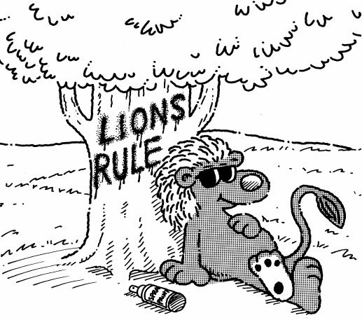
“Lions have DOMAIN over the PLAINS of Africa.”
When Minnesota Fats entered a pool hall, all the other players respectfully stopped their own games to watch him, for they knew this was his DOMAIN.
The DOMAIN of the native Florida panther is in the Everglades and South Central Florida.
The courtroom is the DOMAIN of attorneys and judges.
DORMANT
(DOR munt) adj.
asleep or inactive
Link: DOOR MAT
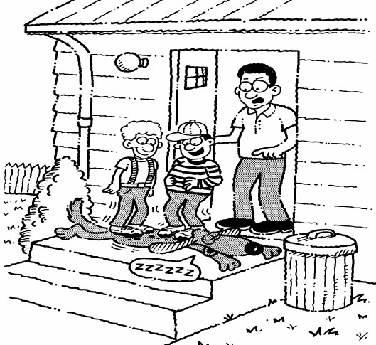
“Boys! Boys! Fido may be DORMANT, but he is not a DOOR MAT.”
Bears hibernate in caves and remain DORMANT throughout the winter.
Jim’s talent for playing the French horn had been DORMANT for so long he lost his ability to play.
The rain fell steadily over the DORMANT village as nightfall approached.
DRACONIAN
(drah KOH nee un) adj.
hard, severe, cruel
Link: DRACULA
“Count DRACULA often behaved in a DRACONIAN manner.”
Our DRACONIAN professor always gives us at least three hours of homework a night and term papers to write over every holiday.
Judge McNamara handed down a DRACONIAN sentence to the defendant: sixty days for littering.
The word DRACONIAN did not originate with the fictional character, Count Dracula, but with an ancient Greek official named Draco who created a harsh code of laws.
DROMEDARY
(DROM ih der ee) n.
a one-humped domesticated camel
Link: ROAMING DAIRY
“On the Arabian deserts, a mother DROMEDARY is a ROAMING DAIRY.”
The DROMEDARY is widely used as a beast of burden in Northern Africa and Western Asia.
A DROMEDARY is also known as an Arabian camel.
The highlight of our trip to Egypt was riding DROMEDARIES around the Great Pyramids of Giza.
DULCET
(DULL set) adj.
melodious, soft, soothing;
pleasing to the ear
Link: DULL SIT
“If you don’t like opera, even the most DULCET tones of the finest sopranos make for a DULL SIT.”
Senator Kramer was a political campaigner who could hypnotize an audience with sweet words and DULCET tones.
Jeff’s parents declared there was nothing DULCET about the rock-and-roll music that shook the house from his room every morning as he dressed for school.
The DULCET music in the elevator made the ride to the fifty-fifth floor pleasurable.
DURESS
(dyoo RES) n.
hardship, restraint, confinement
Link: CONFESS
“During interrogation, the suspect was under DURESS to CONFESS.”
The judge ruled the defendant was under DURESS when the police got his confession, and therefore his confession could not be used as evidence.
It is only in recent years that social scientists have come to understand that many people laboring in competitive industries are under career DURESS.
The crew was under DURESS after drifting for three days in a rubber raft with no food or water.
EDIFICE
(ED uh fis) n.
a building, especially one of
imposing appearance or size
Link: ATE A FACE

“The Great Kong ATE the north FACE of the EDIFICE.”
The construction of one EDIFICE led to another, and New York City became a skyline of enormous skyscrapers.
The Taj Mahal may not be the largest EDIFICE ever constructed, but surely it is one of the most imposing in the world.
Spiderman easily scaled the EDIFICE.
EFFACE
(uh FACE) v.
to rub away
Link: ERASE
“How to EFFACE a face by ERASING it”
We came upon a cemetery by the sea. Many of the headstone inscriptions had been EFFACED by the ravages of time, but we could make out many that were well over two hundred years old.
To assure that he left no clues, the thief EFFACED his fingerprints from the stolen car.
It was hard to make out the old coin’s date because it had been EFFACED over time.
EGALITARIAN
(ih gal uh TARE ee un) adj./n.
advocating the doctrine of equal rights for all citizens;
a person who adheres to egalitarian beliefs
Link: THE GAL I’M MARRYIN’
“THE GAL I’M MARRYIN’ is an EGALITARIAN.” (n.)
The EGALITARIAN protesters demanded equal pay for men and women. (adj.)
Martin Luther King’s EGALITARIAN beliefs inspired many. (adj.)
Martin Luther King was a true EGALITARIAN; he preached for equal rights for all citizens. (n.)
ELAPSE
(ee LAPS) v.
to pass or go by (said of time)
Link: COLLAPSE
“Ted ran the mile in the ELAPSED time of three minutes, forty-seven seconds, and then COLLAPSED.”
Time ELAPSES slowly when someone is waiting for important news.
Two years ELAPSED before they were to meet again, but all the time Jonathan knew Annette was the girl he was going to marry.
Only six seconds ELAPSED after that play because an incomplete pass stops the clock.
ELFIN
(EL fin) adj.
small and sprightly;
mischievous, fairylike
Link: ELEPHANT
“An ELFIN ELEPHANT is a strange sight to see.”
Jane is very small and has a magical ELFIN charm about her until she starts to sing. Then she sounds like a bullfrog in a pond.
The entire family had an ELFIN quality, like little people who belonged in the Land of Lilliputians.
The ELFIN character of Tinkerbell in the Walt Disney movie Peter Pan will always be remembered by generations of Disney fans.
EMBELLISH
(im BEL ish) v.
to beautify by adding ornaments; to
add fanciful or fictitious details to
Link: BELLY
“BELLY dancers EMBELLISH their BELLY buttons with jewels.”
Eric EMBELLISHED his fishing stories; you would think his catches were as big as whales.
A little EMBELLISHMENT to a story rarely hurts, and makes the telling more engaging.
Rod was eliminated as a job prospect when the prospective employer learned he EMBELLISHED his educational background to include a college degree he did not possess.
EMBODY
(em BAH dee) v.
to give bodily form to; to personify;
to make part of a system
Link: BODY
“Jimmy sculpted a statue with the likeness of his face, but which EMBODIED a BODY he’d never possess.”
George Washington was elected president because he EMBODIED all the true values of an American.
The legislature EMBODIED their ideas in the new law.
Michael Jordan EMBODIED all the attributes of being a hall of fame basketball player and sports legend.
EMIT
(ee MIT) v.
to send or give out; to express, utter
Link: SPIT
“Uncle Otto sure could EMIT a lot of chewing tobacco SPIT.”
The new federal laws on automobile EMISSIONS are directed at reducing pollution on our nation’s highways.
The sleeping dog EMITTED a groan which startled us.
David told the mechanic that the car EMITTED a strange sound when he started the engine.
EMULATE
(EM yuh late) v.
to attempt to equal or surpass;
especially through imitation
Link: IMITATE
“Jimmy EMULATES his dad by IMITATING him.”
Most people EMULATE those they most admire.
Tiger Woods has a golf swing that many golfers try to EMULATE.
Pete EMULATED his older brother but was too small to make the baseball team.
ENDURE
(in DYOOR) v.
to carry on through despite
hardships; to put up with
Link: MANURE
“Cowboys ENDURE a lot of MANURE.”
Settlers in the 1800s ENDURED many hardships on their way to California.
“I can’t ENDURE the solitude,” Jimbo Marks told his lawyer, as the sheriff placed him in an isolation cell awaiting trial.
The ENDURING quality I recall most with loving memory about my Aunt Emma was that she never had a bad word to say about anyone.
ENGULF
(in GULF) v.
to surround or enclose completely
Link: GULF
“The GULF of Mexico ENGULFS many deserted islands.”
The movie stars were ENGULFED by a swarm of paparazzi as they arrived at the Academy Awards ceremony.
An ENGULFING movement by the Union troops cut off the Confederate retreat.
The hurricane completely ENGULFED the town in a surge of wind and water.
ENRAGE
(in RAYJ) v.
to put in a rage; infuriate, anger
Link: HEN CAGE
“An ENRAGED farmer discovering a fox in the HEN CAGE”
What ENRAGES my wife is when I forget to wipe my feet before coming into the house.
Muriel’s boss was ENRAGED when he found out she had gone on her vacation to the Caribbean and left a lot of unfinished work on her desk.
The crowd became ENRAGED when it was announced that the concert had been cancelled.
ENRAPTURE
(en RAP chur) v.
to delight, to thrill or give pleasure
Link: CAPTURE
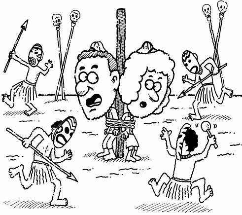
“The head-hunters were ENRAPTURED when they CAPTURED Mr. and Mrs. Cranium.”
John and Mary were ENRAPTURED when they heard they had won a new car in the YMCA fund-raising lottery.
It was an ENRAPTURING performance. Everyone was thrilled to attend the revival of Tennessee Williams’ play, A Streetcar Named Desire.
The kids were ENRAPTURED with the idea of taking the day off from school and going to Disney World.
ENSEMBLE
(ahn SOM bul) n.
a coordinated outfit or costume;
a musical group
Link: HANDSOME DEVIL
“James Bond was a HANDSOME DEVIL in his spy ENSEMBLE.”
Darla found the perfect pair of shoes to match her ENSEMBLE she is going to wear to the prom.
A French fashion designer will work an entire year to get ready to show his ENSEMBLES.
The wedding ENSEMBLE consisted of a troupe of gypsy musicians, dancers, and singers.
ENTICE
(in TICE) v.
to lure, to attract, to tempt
in a pleasing fashion
Link: MICE
“Fido uses MICE to ENTICE cats.”
The delicious aroma of popcorn in the theater lobby ENTICED us to purchase a large bucket before the movie.
An ENTICING feature of working in a bakery is that you get to eat all the doughnuts you want.
Your job proposal in Michigan is ENTICING, but my family likes it here in Palm Beach; Michigan’s winters are too cold for native Floridians like us.
ENTOMB
(in TOOM) v.
to place in or as if in a tomb, or a grave
Link: ROOM
“Ahmed, you fool, you have ENTOMBED us in the burial ROOM.”
The Egyptians ENTOMBED their kings in special burial chambers together with all their possessions needed in the afterlife.
There have been cases where people, thought dead, were ENTOMBED while still alive.
In the Pittsburgh coal mine disaster of 1938, thirty-six coal miners were ENTOMBED in a tunnel for thirteen days. Only fourteen survived.
ENTOMOLOGY
(en tuh MOL uh jee) n.
the scientific study of insects
Link: APOLOGY

“An ENTOMOLOGIST making his APOLOGY to the insects he must study”
The primary function of ENTOMOLOGISTS is to discover how to prevent insects from destroying crops.
Bobby use to collect bugs when he was a kid so it didn’t surprise us when he latter became an ENTOMOLOGIST.
(Many words ending in GIST refer to a person of science in their particular field.) A GEOLOGIST studies the earth; a PSYCHOLOGIST is a scientist of human behavior; and a METEOROLOGIST is a person who studies the atmosphere and weather.
ENTREAT
(en TREET) v.
to ask earnestly; to implore, plead, beg
Link: TREAT
“What is more common than a child ENTREATING a parent for a TREAT of candy or ice cream.”
Roger said he would ENTREAT Professor Jones to permit us to take the exam early so we could go on the road with the booster club.
Our entire family ENTREATED our father to take us on a summer vacation to Europe.
The judge listened to the ENTREATIES of the prisoner and decided to give him a suspended sentence because of his family situation.
ERUDITE
(ER yoo dyte) adj.
deeply learned, scholarly
Link: AIRTIGHT
“Knowing that his case was AIRTIGHT, the defense attorney became confident and ERUDITE.”
Most professional speakers are ERUDITE, with the understanding of proper grammatical structure and a large vocabulary at their command.
When mom was diagnosed with cancer, we searched for the most ERUDITE doctor we could find.
(To be ERUDITE is to have ERUDITION.) The extent of Dr. Smith’s library is an indication of his ERUDITION.
EUPHONIOUS
(yoo PHONE ee us) adj.
pleasing to the ear
Link: YOU PHONE US
“You must be beautiful because you sound so EUPHONIOUS when YOU PHONE US.”
Carly sings in the choir because she has a sweet, EUPHONIOUS voice.
The low, EUPHONIOUS croaking of the summer frogs was music to Jeff’s ear.
The grunting of a mature elephant seal is anything but EUPHONIOUS.
EVADE
(ee VAYD) v.
to elude or avoid by cunning;
to flee from a pursuer
Link: BLADE
“A magician’s secret for EVADING BLADES”
The escaped prisoners EVADED the authorities by breaking into a church and disguising themselves as nuns.
Jane always managed to EVADE helping her sister wash the dinner dishes by claiming she had homework to do.
Liz has been successful of EVADING his phone calls.
EVOKE
(ee VOHK) v.
to summon forth, call to mind,
awaken, produce, suggest
Link: COKE
“Sometimes a song, a picture, even a COKE, can EVOKE the most poignant of youthful memories.”
A clap of thunder and a flash of lightning over the old castle EVOKED dark spirits for the villagers who remember the night of the headless ghosts.
His comments EVOKED protests from the shocked listeners.
Grandpa tried to EVOKE a smile from the baby by tickling her chin.
EXHUME
(ig ZOOM) v.
to dig up from a grave;
to bring to light, uncover
Link: TOMB
“Archeologists like to EXHUME TOMBS.”
The judge issued a court order to EXHUME the grave of an unknown soldier.
Historians EXHUMED the literary reputation of novelist Jack London.
Mrs. Brown EXHUMED old love letters sent to her by her husband before they were married.
EXPUNGE
(iks PUNJ) v.
to remove; to delete; to erase
Link: SPONGE
“A SPONGE EXPUNGING a spill”
The judge ordered the clerk to EXPUNGE the lawyer’s statement from the record.
The wet and muddy footprints were EXPUNGED with soap and water.
The teacher told Justin that EXPUNGING the low grades from his record was not something she was willing to do.
FACILITATE
(fuh SIL uh tayt) v.
to make easier, to help bring about
Link: CELL MATE
“You’re lucky to have a CELL MATE who FACILITATES a homey atmosphere.”
CDs FACILITATE learning a foreign language.
In order to FACILITATE the sale of their home, George came down on the price.
Jack’s tools FACILITATED the repair of the sink.
FATHOM
(FATH uhm) v.
to understand fully;
to penetrate the meaning of
Link: FAT THUMB
“Doctors could never FATHOM the reason for Larry’s FAT THUMB.”
Her friends thought they had FATHOMED the reason Estelle applied for entrance in an all-boys college: She never had any dates.
The jury found it hard to FATHOM how the defendant could commit such a terrible crime.
I can’t FATHOM the reason why Paul dropped out of college.
FAWN
(fawn) v.
to show affection
Link: FAWN
“A FAWN FAWNING over his mother”
The head of the movie studio didn’t see through the FAWNING of all his underlings, believing they truly thought he was a genius.
Mr. Johnson was a professional at “sucking up” to everybody he thought could help him advance in his career, a professional FAWNER from the word go. (n.)
The grandmother FAWNED over her grandchild, tickling him and making goo-goo sounds.
FEIGN
(fayn) v.
to give a false
appearance; to pretend
Link: INSANE
“The prisoner FEIGNED INSANITY as a defense to his crime.”
Jeremy talked a good game but FEIGNED knowledge of space science he did not possess.
Elizabeth FEIGNED illness in order to stay home from school on the day of her final exam.
(Any FEIGNED action is a FEINT.) The boxer kept FEINTING with his left hand, waiting for an opening to hit a knockout punch with his right.
FESTER
(FES tur) v.
to generate pus; to become a source
of resentment or irritation
Link: UNCLE FESTER
“UNCLE FESTER likes to pick his scabs and watch them FESTER.”
Diane’s FESTERING resentments toward her boss finally drove her to quit her job.
Private Sholley’s wounds had FESTERED for so long it was nearly impossible for the surgeons to save his leg.
Coach Jones’ resentments toward the complaining players on the team FESTERED until he finally told them to shut up or quit.
FETISH
(FET ish) n.
any thing or activity to which
one is irrationally devoted
Link: BRITISH
“The BRITISH, they say, have an absolute FETISH for tea.”
My mother has a shoe FETISH; she has more shoes in her closet than clothes.
Mary has a FETISH for chocolate; she hides a box under her bed, in her desk at the office, and in her purse.
Dora has a cat FETISH; she owns over 25 cats and still wants more.
FICKLE
(FIK ul) adj.
often changing for no reason;
not loyal or consistent
Link: PICKLE
“Pregnant women are very FICKLE; one moment they want ice cream, the next, PICKLES.”
The summer weather is always very FICKLE, each morning the sun shines, but when you are ready to play golf, it starts to rain.
Brad is a FICKLE eater; it’s hard to say what he likes to eat.
Coach Adams’ FICKLENESS was known by all his players; he would say you were the best player on the team, but would replace you the first time you made a mistake.
FJORD
(fyord) n.
a long narrow inlet from the sea
between steep cliffs or hills
Link: FORD
“FORDS in a FJORD”
Norway and New Zealand are two countries noted for having the most scenic FJORDS in the world.
FJORDS are generally deep enough so that large cruise ships have more than enough water to navigate up their length.
The Grand Canyon could be the grandest FJORD of all, if only it were on the coast with an inlet from the sea.
FLEECE
(flees) v./n.
to defraud, swindle; also the wool
of a sheep or similar animal
Link: FLEEING
“FLEEING with the FLEECE” (n.)
It was spring on the Australian sheep farms, the time of year when the sheep are FLEECED for their wool. (v.)
The housewives on our street were FLEECED by a con man selling bogus magazine subscriptions. (v.)
Jim had larceny in his heart all his life and would sooner FLEECE a customer than make an honest deal. (v.)
FORAGE
(FOR uj) v.
to search or hunt for
food and provisions
Link: FOREST

“Wild animals FORAGING for food in the FOREST”
When the last of our provisions were gone, it was decided that two men would take our only rifle and go FORAGING for game.
We FORAGED through the shed for plywood, tin sheets, and boards, anything with which to board up the windows and doors before the full force of the hurricane struck.
After the campers fell asleep in their tents, the raccoons began FORAGING through the camp site for anything to eat.
FORBEAR
(for BEAR) v.
to do without; to leave alone;
to refrain from; to abstain
Link: FOUR BEARS
“Please FORBEAR feeding the FOUR BEARS.”
To FORBEAR giving your opinion on any controversial matter until you have first heard all the facts is generally the wisest course of action.
Jeannie said it was difficult to FORBEAR from smoking after doing it for thirty years.
Henry FORBORE his decision to close the store, deciding to wait until after the Christmas season.
FORSAKE
(for SAKE) v.
to abandon, to
give up, to renounce
Link: FOUR SNAKES
“The Higgins family wisely decided to FORSAKE their campsite in favor of FOUR SNAKES.”
The parents urged their daughter to FORSAKE her career as a model and return to their home to become a school teacher.
All the general’s troops had FORSAKEN him, and he had no choice but to follow them and return to safe ground.
Ben FORSOOK his career of politics and became a university professor.
FORTUITOUS
(for TWO ih tus) adj.
good fortune occurring
by accident or chance
Link: FORTUNE FOR THE TWO OF US

“A FORTUITOUS FORTUNE FOR THE TWO OF US”
It was a series of FORTUITOUS events that advanced my career in television.
“The most FORTUITOUS event of my entire life,” said President Roosevelt, “Was meeting my wife, Eleanor.”
It was FORTUITOUS missing the ill-fated flight because of the traffic jam on the way to the airport. (n.)
FRAUGHT
(frawt) n.
teeming with; laden; full;
involving; accompanied by
Link: CAUGHT
“Eric CAUGHT a boatload in a lake FRAUGHT with fish.”
The freighter was FRAUGHT with cargo.
Although Mark Twain’s books were FRAUGHT with humor, they nevertheless drove home good advice for their readers, young and old.
Kathy was FRAUGHT with guilt about losing her temper with the children when she found out it wasn’t their fault.
GAMIN
(GAM in) n.
a neglected boy left to
run about in the streets
Link: JAMMIN’
“A JAMMIN’ GAMIN”
In India, everywhere our tour bus stopped, there would be a gang of GAMINS begging for money, but if you dared give a rupee to one, a hundred more would immediately appear.
In the novel, Oliver Twist, we learn of the intolerable living conditions in English orphanages of the nineteenth century and the life of the many homeless, streetwise GAMINS.
My dad always told me to stay in school and study hard or I’d become a GAMIN.
GAZEBO
(guh ZEE boh) n.
an outdoor structure with
a roof and open sides
Link: ZEBRA
“A ZEBRA GAZEBO on the Mari Mari Plains of Kenya, East Africa”
A GAZEBO is most always found in a backyard or park.
The GAZEBO in the mission courtyard was used for weddings in the summer. In the winter, goats would come and huddle together to stay warm and out of the rainy weather.
On Sunday afternoons the family would gather together in the shade of our backyard GAZEBO.
GENERALIZE
(JEN ur ul ize) v.
general rather than specific;
to form a general conclusion
Link: GENERAL’S EYES
“To say that all GENERALS’ EYES are the same is to GENERALIZE.”
Wilma’s problem was she always GENERALIZED. Everything was either always bad or always good, and she could never specifically say what she liked or disliked.
Our teacher asked us to be specific when answering the test questions and avoid GENERALIZING.
To say that all politicians are crooks and all lawyers are honest is to GENERALIZE.
GIDDY
(GID ee) adj.
a light-headed sensation;
dizzy; lightheartedly silly
Link: CITY
“Farmer John gets a little GIDDY every time he goes to the CITY.”
After Sue won the beauty contest, she was absolutely GIDDY with joy.
Jackie didn’t faint, but she said the sun was so hot she felt GIDDY.
Bill never had more than one beer; anything more made him GIDDY.
GIRD
(gird) v.
to encircle as with a belt;
to prepare as for action
Link: HERD
“Curly GIRDED the HERD with his trusty lasso.”
Johnny’s job each week of the soccer season was to GIRD the field with a line of white chalk to mark the boundaries of the playing field.
Dad’s bath robe is GIRDED with a terry cloth belt.
GIRDED for action, the tanks moved forward into battle formation.
GIRTH
(girth) n.
the distance around
something; circumference
Link: BIRTH
“Before giving BIRTH, ladies are quite large in GIRTH.”
Before crawling into a sewer pipe, it is first wise to measure its GIRTH.
The GIRTH of the planet Earth is about twenty-five thousand miles.
The GIRTH around the middle of the horse was too large to fasten the saddle.
GLOAT
(gloht) v.
to brag greatly
Link: GOAT

“And I got this award for receiving so many awards,” said the GLOATING GOAT.
For years she GLOATED over the marriage of her daughter to the most eligible bachelor in town.
After winning the state championship last year, the football team GLOATED for a whole year until they lost the first game of the season.
The mechanic said he didn’t want to appear to GLOAT, but he did warn his customer last year he would have to fix it now or fix it later, and later would cost more.
GLUTTON
(GLUT en) n.
one who eats or consumes a great deal; having
capacity to receive or withstand something
Link: GUT TON
“If you’re a GLUTTON, your GUT could weigh a TON.”
The neighbor’s kids are such GLUTTONS, whenever they come over they clean out the fridge.
Jack was a GLUTTON for punishment; no matter how many times he was knocked down in the fight, he kept getting up.
A baseball freak, JoAnne GLUTTONOUSLY reads every sports book on baseball she can get her hands on. (adv.)
GOSSAMER
(GOS uh mer) n./adj.
delicate floating cobwebs; a sheer gauzy
fabric; something delicate, light, flimsy
Link: CUSTOMER
“The spider’s GOSSAMER captured many unhappy CUSTOMERS.” (n.)
The bride wore a white silk wedding dress which touched the floor as she proceeded up the aisle to the altar. A GOSSAMER of fine Italian lace gently touched her face. (n.)
Between the audience and the actors on the stage hung a thin GOSSAMER of fabric, heightening the feeling that the actors were in a dream-like setting. (n.)
The GOSSAMER shawl she wore was not enough to keep her warm in the frigid air. (adj.)
GRANDILOQUENT
(gran DIL uh kwent) adj.
attempting to impress with big
words or grand gestures
Link: GRAND ELEPHANT
“The GRAND ELEPHANT made a GRANDILOQUENT speech.”
It was another GRANDILOQUENT political affair; the candidates made the same old promises for lower taxes and more free services.
They may be eloquent, but there is nothing grand about pompous GRANDILOQUENT speakers.
The new teacher’s GRANDILOQUENCE didn’t fool the class one bit. She really knew very little about South American history.
GRANDIOSE
(GRAN dee ohs) adj.
grand and impressive, especially
flashy and showy
Link: GRAND HOSE
“The GRANDIOSE Alaskan Pipeline resembles nothing more than a GRAND HOSE.”
Our coach had a GRANDIOSE plan to beat the Dallas Cowboys, only he didn’t count on the fact that they had a GRANDIOSE plan of their own.
In all respects it was a simple enough house, unlike many others in that part of town. But the one exception was the GRANDIOSE fireplace in the family room, big enough to drive a truck through.
The director demanded a GRANDIOSE car chase in his action movie.
GUILE
(gyle) n.
cunning, deceitfulness; artfulness
Link: MILE
“Nobody could say Billy didn’t use GUILE when running the MILE.”
Few people realized Bob’s reputation as a shrewd businessman was due to his GUILE.
The GUILE of the ticket scalper was shocking. He was selling tickets today for yesterday’s tennis matches.
(BEGUILE is different from GUILE in that it is deception in a charming way.) Lois BEGUILED her beau with fetching flirtations.
GUISE
(gize) n.
appearance, semblance
Link: DISGUISE
“A master of DISGUISE, Sherlock Holmes concealed his real GUISE.”
Every night the undercover detective would enter the toughest part of town in the GUISE of a junkie, uncovering the identity of many drug pushers.
The undercover police car had the GUISE of a typical family car.
Under the GUISE of a traveling businessman, the terrorist was able to pass security.
HARANGUE
(huh RANG) v.
to lecture, berate; a long bombastic speech
Link: MERINGUE
“The mayor’s HARANGUE that women should stay home more was met with MERINGUE pies.”
The sergeant HARANGUED his recruits for not keeping in step as the platoon practiced marching.
Our neighbor is a farmer who goes to town once a week on Saturdays and HARANGUES everyone he meets on how badly the government treats farmers.
A perpetual HARANGUER, Jeannie was a feminist who believed everyone who didn’t believe as she did was an anti-feminist.
HARROWING
(HARE roe ing) adj.
extremely distressing; disturbing or frightening
Link: HARE ROWING
“A HARROWING experience for a HARE ROWING”
After the HARROWING experience when Eddie’s main parachute didn’t open, and his emergency chute saved him only at the last minute, he vowed never to jump again.
(HARRIED is to be troubled or bothered while HARROWING is to be frightened to the extreme.) At first we were HARRIED by the gang members, called names and insulted, but later it became a HARROWING experience as they chased and threatened us with knives.
HERBICIDE
(HERB uh side) n.
a substance used to destroy
plants, especially weeds
Link: SUICIDE
“When weeds commit SUICIDE, they use a HERBICIDE.”
Environmentalists have proven that HERBICIDAL runoffs from farmland pollute our rivers, streams, and oceans.
Many farmers use HERBICIDE for controlling weeds on their farms.
Ed completely destroyed his lawn after he mistook HERBICIDE for fertilizer.
HISTRIONIC
(his tree AHN ik) adj.
overly dramatic, theatrical
Link: HISTORY
“Professor Bradley liked his HISTORY on the HISTRIONIC side.”
As soon as you would mention the word wrinkle, the middle-aged actress would fall into a state of HISTRIONIC tears.
Everything Michael said was on the swaggering, HISTRIONIC side, as if he were the coolest guy on campus.
The young actor’s HISTRIONIC portrayal of his character was too much to bear.
HOARD
(hord) v.
to accumulate for future use; stockpile
Link: STORED
“A squirrel HOARDS nuts, and STORED them for the approaching winter.”
Laura doesn’t eat her Halloween candy, instead she likes to HOARD it and make it last all year.
We told Ed there was no point in his HOARDING all the cake; he might as well share with us before it spoiled.
The government announced during the national crisis that HOARDERS would be punished with jail sentences.
HOVEL
(HUV ul) n.
a small, miserable dwelling;
an open, low shed
Link: SHOVEL
“The mice’s HOVEL was a rusty old SHOVEL.”
In the famous play, Tobacco Road, the characters were poor tobacco farmers who live in HOVELS.
Compared to the Summertons’ palatial estate on Long Island, Jane said her apartment in the Bronx was a HOVEL.
The poor live in HOVELS on the outskirts of town.
HUSBANDRY
(HUHZ buhn dree) n.
the cultivation, production, and/or management
of resources of edible plants or animals
Link: HUSBAND TREE
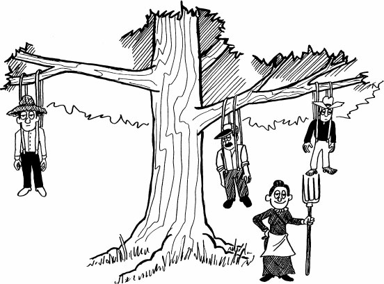
“To help in her HUSBANDRY chores, Aunt Emma had her own HUSBAND TREE.”
Bud’s superb HUSBANDRY of his orange grove resulted in a larger than expected crop this year.
HUSBANDRY techniques have improved significantly resulting in an increase in production.
Indians were reluctant to adopt English practices of livestock HUSBANDRY.
IDIOSYNCRASY
(id ee oh SING kruh see) n.
a behavioral quirk; a person’s idea about
behavior different from others
Link: SINK CRAZY
“Waldo’s artistic IDIOSYNCRASY is he’s SINK CRAZY.”
Harriet had a way of smacking her lips every time you asked her a question, a seemingly harmless enough IDIOSYNCRASY, except that it drove you crazy after a while.
Jimmy Chen’s habit of eating soup as a last course is no IDIOSYNCRASY; most Chinese have soup last instead of first as is the American custom.
Stan’s IDIOSYNCRASY of constantly clicking his pen drove the whole class crazy.
IMPEDE
(im PEED) v.
to obstruct or interfere with; to delay
Link: SPEED
“The job of highway patrolmen is to IMPEDE SPEEDING motorists.”
He was only my uncle, but he always told me no matter what, not to let anyone IMPEDE my ambition to go to medical school.
(Something that IMPEDES is an IMPEDIMENT.) As a hopeful runner on the school track team, James Carver’s biggest IMPEDIMENT to his speed was his short legs.
The bad weather IMPEDED the climber’s attempt to summit Mount Everest by nightfall.
INCITE
(in SIGHT) v.
to arouse to action
Link: FIGHT
“The pitcher’s bean ball INCITED the batter to FIGHT.”
The mob was INCITED to riot when the police arrived and began hitting people with their nightsticks.
When Rodney decided that his case was hopeless, nothing the doctors could say would INCITE him to fight his illness.
Waving a stick at Jerry’s dog only INCITES him and increases the chance he will bite you.
INCONGRUOUS
(in KAHN grew us) adj.
not appropriate, unsuited to the
surroundings; not fitting in
Link: IN CONGRESS
“The new Alaskan senator’s appearance IN CONGRESS was INCONGRUOUS.”
Ed appeared INCONGRUOUS wearing his tuxedo on an old-fashioned hayride.
The INCONGRUITY with Joseph’s chosen career was that he had a Ph.D. in chemistry, but preferred to work as a mullet fisherman.
INCONGRUOUSLY, Dianne spent several days a week at the library, even though she professed that she didn’t like to read.
INFAMY
(IN fah mee) n.
an evil reputation; extreme disgrace
Link: FAMILY
“Blackbeard the Pirate’s FAMILY will live in INFAMY.”
Western outlaws such as Jesse and Frank James have been made heroes in movies, but in reality they were INFAMOUS for their bad deeds.
The INFAMIES of Germany’s Adolf Hitler will live for eternity.
The great white shark has been made INFAMOUS by the movie Jaws.
INSOUCIANT
(in SOO see unt) adj.
calm and carefree; lighthearted
Link: SOUTH SEA ANT
“SOUTH SEA ANTS are the most INSOUCIANT ants of all.”
Children play INSOUCIANTLY, as if they did not have a care in the world.
Jake’s INSOUCIANT behavior was inappropriate at his grandfather’s funeral. It lacked respect for his memory.
Bob’s INSOUCIANT demeanor in the locker room before the big game meant he was extremely confident that we would win.
INTERVENE
(in tur VEEN) v.
to come between; to mediate,
to occur between times
Link: BETWEEN

“Referees INTERVENE BETWEEN player disputes.”
Harold and his twin brother might have argued all day if their father hadn’t INTERVENED and said that if they couldn’t decide who would ride in the front seat, they would both ride in the back.
Our teenage daughter doesn’t like it when her mother and I INTERVENE in her social life.
So much had happened to the family in the INTERVENING years since Brett had gone off to college.
INVEIGLE
(in VAY gul) v.
to tempt or persuade
by using deception or flattery
Link: BAGEL
“The animal trainer INVEIGLED the lion to perform by tempting him with a BAGEL.”
My brother, Ryan, INVEIGLED me into doing his chemistry homework by promising to take my turn washing dishes for the next week.
New York City street vendors INVEIGLE people into purchasing counterfeit Rolex watches for many times what they are worth.
Laura INVEIGLED her history teacher into allowing her to retake the mid-term exam she missed because she overslept.
IRASCIBLE
(ih RAS uh bul) adj.
easily angered, irritable
Link: WRESTLE BULLS
“When he became IRASCIBLE, the Masked Marvel would WRESTLE BULLS.”
Normally, Rose was a pleasant wife and mother but if a member of her family prevented her from watching her favorite “soaps,” she could become quite IRASCIBLE.
Uncle Tim was a real grouch; even on his birthday he would find a way to become as IRASCIBLE as a spoiled child.
The school principal became so IRASCIBLE even his teachers avoided speaking to him.
JOUST
(joust) v./n.
to engage in combat or competition;
any combat suggestive of a joust
Link: MOUSE
“A JOUSTING MOUSE in King Arthur’s time” (v.)
Running and enjoying the competition, Bill and Harry JOUSTED each other playfully. (v.)
It was a JOUST to the death between Sir Lancelot and the Black Knight. (n.)
Her toes all bruised, Elizabeth declared it wasn’t a dance, but a JOUSTING match. (v.)
KARMA
(KAHR muh) n.
fate, destiny; the force generated
by a person’s good or bad actions
Link: HARM-A
“No HARM-A will come if you have good KARMA.”
All his life he possessed a protective KARMA that kept him out of harm’s way.
Louise often told her friends it was her KARMA to die young and beautiful.
Genghis Khan likely got a lot of bad KARMA for all the death and destruction he caused.
LACONIC
(luh KAHN ik) adj.
brief, using few words
Link: TONIC
“Grandma was LACONIC when it came time for Grandpa’s TONIC.”
Benjamin’s LACONIC speech habits gave him a reputation for thoughtfulness and intelligence.
The president’s LACONIC speech only lasted ten minutes, when it usually takes an hour.
The fictional heroes of the old west were usually cowboys who spoke LACONICALLY, when at all. (adv.)
LAMENT
(luh MENT) v.
to express sorrow
or regret; to mourn
Link: CEMENT
“We LAMENT that Joe got buried in CEMENT.”
There must have been thousands of people at the funeral to LAMENT the death of Princess Diana.
The nation LAMENTS the passing of the president while at the same time celebrating his achievements while in office.
It is LAMENTABLE that Roscoe quit college in his sophomore year; his professors considered him the brightest engineering student in his class. (adj.)
LANGUISH
(LANG gwish) v.
to become weak or feeble;
sag with loss of strength
Link: LAND FISH
“A FISH on LAND will quickly LANGUISH.”
An outdoorsman all his life, Mr. Franklin quickly LANGUISHED in his job as a night watchman.
It was so hot in the theater, Charlotte soon began to LANGUISH.
Running in his first marathon, Kevin began to LANGUISH with only a mile to go.
LASSITUDE
(LAS uh tood) n.
a condition of weariness; fatigue
Link: LAZY DUDE
“A LAZY DUDE with LASSITUDE”
After eating three servings of Thanksgiving dinner, George succumbed to a feeling of LASSITUDE and fell asleep on the couch.
The troops overcame their LASSITUDE and marched another five miles.
LASSITUDE finally overcame the weary travelers after a full day of traveling.
LAUDABLE
(LAW duh bul) adj.
worthy or deserving of praise
Link: APPLAUDABLE
“A LAUDABLE performance that was APPLAUDABLE”
Hector’s teacher told him she thought it most LAUDABLE that he wanted to become a doctor, but an F in biology was not going to help him achieve his goal.
David’s LAUDABLE performance on the football field was a big part of the reason his team won the state championship.
The president’s LAUDABLE speech ended with a standing ovation.
LAX
(lax) adj.
careless, negligent; not tense, slack
Link: TAX
“This is what happens when you’re LAX in paying your TAX.”
The bank robbers planned to rob the bank when security was LAX.
Most bachelors are LAX in their housekeeping, but Mike and Bob set a record for LAXITY, as they only washed eating utensils when they were ready to eat.
When they arrived at the dock, they found the ropes were LAX, and their boat was bumping against the dock.
LEGACY
(LEG uh see) n.
something handed down from one who has
gone before or from the past; a bequest
Link: LEG I SEE
“The LEG I SEE is my entire LEGACY from Great-Grandfather Paul the Pirate.”
The LEGACY of the copper mining industry is the creation of mountains of waste where beautiful, unspoiled forests once stood.
Richard Nixon wanted his LEGACY to be of his accomplishment while in office and not of being the first president to be impeached.
The Johnson family’s ancestral LEGACY was to have blonde hair and green eyes.
LESION
(LEE zhun) n.
wound, injury; especially one
created by a disease
Link: LEGION
“Soldiers of the French Foreign LEGION suffering from their LESIONS”
The nurses told Crystal to keep the bandage on her knee until the LESION healed, otherwise the open sore would be prone to infection by airborne bacteria.
When a person has a LESION, even a small one that will not heal, it is time to see a doctor.
Ebola is an infectious disease characterized by open LESIONS of the skin.
LETHARGY
(LETH er jee) n.
laziness, tiredness; sluggish
Link: LEOPARDS TEA
“LETHARGIC LEOPARDS having TEA”
I snapped out of my LETHARGY and went to exercise.
LETHARGY overcame everyone after eating a huge Thanksgiving dinner.
His doctor told Jim he was in good health. His LETHARGY at work and at home was probably due to his being overweight, eating too much, and exercising too little.
LEXICON
(LEX sih kon) n.
a dictionary; vocabulary terms used in or
of a particular profession, subject, or style
Link: MEXICAN
“A MEXICAN reading his LEXICON”
The LEXICON used by air traffic controllers is incomprehensible to non-pilots: “down wind to twenty seven, hold three twenty at two thousand, traffic at eleven o’clock, two miles.”
Sailors have a nautical LEXICON; “port means left, starboard means right, bow means front, and stern means rear.”
The confident general told his troops that defeat was a term that did not exist in his LEXICON.
LIEU
(loo) n.
instead of; in place of
Link: BREW
“In LIEU of a BREW, Billy The Kid had an orange soda.”
In LIEU of entering the university in September, Roger decided to work and save some money and start in January.
Not wanting to lose her amateur standing after winning the U.S. Open singles title, Faye accepted the silver trophy in LIEU of the $545,000 first prize check.
In LIEU of driving our own car to the restaurant, we decided to take a taxi.
LOITER
(LOY ter) v.
to remain in an area without
any specific reason; to lag behind
Link: LAWYER
“Ambulance-chasing LAWYERS LOITER outside hospitals waiting for customers.”
A sign outside the players’ entrance to the stadium said, “No LOITERING,” but autograph hounds LOITERED there before and after games anyway.
The supporting actor was on stage during most of the play, but he was so ineffective it was almost as if he were a LOITERER.
It is against the rules to LOITER on school grounds on the weekends.
MAIM
(maim) v.
to disable or disfigure, to cripple
Link: BLAME
“Roger MAIMED the bear’s ear and BLAMED Walter.”
Joshua was a private in the US Army and saw action in the invasion of France where on the sixteenth day after the landing, he was MAIMED when he stepped on a land mine and lost his leg.
Every year people are MAIMED in automobile accidents by drunk drivers, the major cause of highway accidents.
The MAIMED deer scurried into the woods after being wounded by the hunter’s arrow.
MARAUDER
(muh RAWD er) n.
a raider, intruder
Link: MA RAIDER
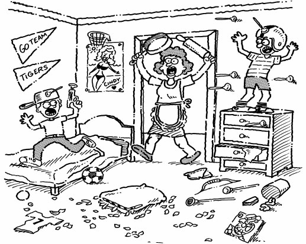
“The fiercest MARAUDERS are MA RAIDERS.”
Among the legendary pirate MARAUDERS of the eighteenth century were Captain Kidd, Calico Jack Rackam, Charles Vane, Blackbeard, and Sir Henry Morgan.
Christine referred to her husband, Christopher, as a kitchen MARAUDER for his midnight raids on the ice box.
During the Civil War, MARAUDING bands of Confederate guerrillas raided Union supply lines in the Midwest.
MARSHAL
(MAHR shul) v./n.
to assemble together for the purpose of doing
something; also an officer in the police or military
Link: MARSHAL
“The MARSHAL MARSHALED a posse to capture the Waco Kid.”(n./v.)
MARSHALING their forces, the British defeated Rommel at El Alamein. (v.)
The U. S. MARSHAL apprehended the suspect at the airport and took him into custody. (n.)
The defense team MARSHALED its arguments before presenting them to the jury. (v.)
MARTYR
(MAHR tur) n.
someone willing to sacrifice and even
give his/her life for a cause; also one
who pretends suffering to gain sympathy
Link: HARDER
“It’s HARDER to be a MARTYR.”
She was a professional MARTYR, all-suffering for her children, or so she would tell them ten times a day.
Joan of Arc was undoubtedly the most famous MARTYR in modern history, burned at the stake because she refused to go against her beliefs.
Jack was a MARTYR to his job; he worked seven days a week and rarely took a day off.
MASTICATE
(MAS tih kayt) v.
to chew
Link: MAST ATE
“Henry ATE the MAST when he started to MASTICATE.”
The doctor explained that a person’s digestion is aided when they MASTICATE their food thoroughly.
The Kiwi bird MASTICATES food before giving it to its young.
The horses were MASTICATING their food.
MELANCHOLY
(MEL un kahl ee) n.
depression of spirits; gloomy; weary
Link: MELON
“Farmer Brown was beset with MELANCHOLY when he saw what the worms had done to his MELON patch.”
Sitting in her living room and thinking of her late husband brought a touch of MELANCHOLY to Aunt Mildred’s remembrances of Uncle John.
The best word to describe Jim is MELANCHOLY; no matter the situation, he always walks around looking like he had lost his best friends.
It was a MELANCHOLY day, gloomy and dark.
MENAGERIE
(muh NAJ uh ree) n.
a collection of live wild animals on exhibit
Link: LINGERIE
“A MENAGERIE of LINGERIE”
Busch Gardens has a wonderful MENAGERIE of lions, tigers, elephants, and other wild animals roaming free and on display in a park-like setting.
To have a house pet is one thing, but Susan keeps so many parrots and cats in her house, it is a virtual MENAGERIE.
With twelve children in the family, the Jacksons referred to their offspring as their MENAGERIE.
MIGRATORY
(MY gruh tor ee) adj.
roving, wandering, nomadic
Link: MY STORY
“MY STORY is one of many MIGRATORY movements.”
Wild geese MIGRATE to Canada in the summers and Mexico in the winters.
Most American Indian tribes in the Old West were MIGRATORY and followed the movements of the buffalo.
Fruit pickers are MIGRATORY workers who move from place to place at harvesting time.
MILIEU
(meel YOO) n.
environment or surroundings
Link: MILDEW
“The boys’ locker room showers were a MILIEU of MILDEW.”
After a long sea journey, a sailor on land for the first few days feels out of his MILIEU.
The proper MILIEU for raising a family is a home setting with loving parents who understand child rearing; something every parent must work at and not take for granted.
The New York Stock Exchange is a MILIEU of frenzied activity during trading hours.
MIRAGE
(muh RAJ) n.
unreal reflection; an optical illusion
Link: GARAGE
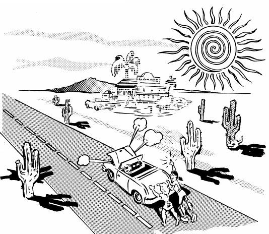
“The GARAGE they thought they saw crossing the desert was only a MIRAGE.”
Her beauty was mostly a MIRAGE created by the art of cosmetics.
Desert caravans often see MIRAGES on days when heat waves are reflected off the burning sands.
The MIRAGE of the lake was a welcome sight to the parched desert traveler until he bent down to take a drink and got a mouthful of sand.
MISANTHROPY
(mis AN thruh pee) n.
someone who hates mankind
Link: MISS ANTHROPY
“MISS ANTHROPY was a MISANTHROPIC person.”
A more MISANTHROPIC person you never did see. He hates everyone. (adj.)
Adolph Hitler is known for his MISANTHROPY.
Because of his MISANTHROPY, he retreated to the summit of a high mountain to live alone.
MISNOMER
(mis NOH mur) n.
an incorrect or inappropriate name
Link: MISS HOMER
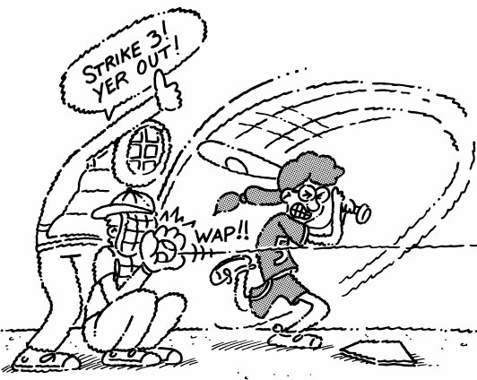
“What a MISNOMER, our little MISS HOMER struck out five times in a row.”
A nickname like “Speedy” is a MISNOMER when directed toward one who is slow at what they do.
We usually have dinner at this very small Italian restaurant called The Spaghetti Factory, obviously a MISNOMER of major proportions.
It was no MISNOMER when they called Harry Houdini, “The Great Houdini,” as he was the greatest escape artist of his time.
MODE
(mowd) n.
a way or method of doing
something; type, manner, fashion
Link: TOAD
“TOADS have a special MODE for catching dinner.”
Four-wheel drive vehicles have gears to go from two to four wheel drive MODE.
Once he became a lawyer, Hal put aside his jeans and dressed in the MODE of his contemporaries.
Our vacation was in a laid-back MODE, sleeping-in late and then relaxing on the beach.
MORES
(MAWR ayz) n.
customary cultural standards;
moral attitudes, manners, habits
Link: MORE As
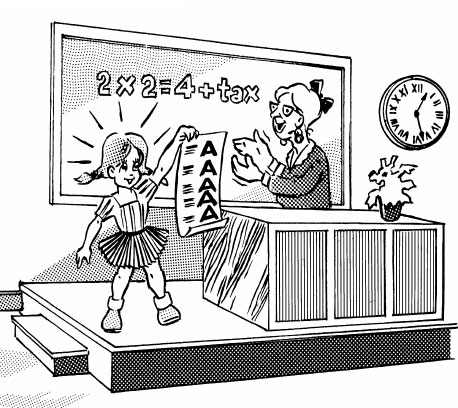
“Our educational MORES have it that the MORE As a student makes, the better their education.”
According to Chinese MORES, it is considered polite for dinner guests to belch at the table as a gesture of appreciation and enjoyment.
It is said that a certain actress of her acquaintance has dubious morals and disregards the accepted MORES for married women.
The problem with some community MORES is that the older generation clings to outdated moral attitudes no longer appropriate for the times.
MUSE
(myooz) v.
to ponder; meditate; think about at length
Link: FUSE
“Don’t MUSE once the FUSE is lit.”
Rick was such a good auto mechanic he never MUSED over what the problem might be; he knew immediately and went right to work fixing it.
Chess is a MUSING game of skill whereupon each player MUSES over all the possible moves before deciding which piece to move.
Though the odds of winning the lottery are very low, it is fun to MUSE about what you would do if you actually won.
MUSTER
(MUHS tur) v./n.
to collect or gather; the act of
inspection or critical examination
Link: MUSTARD
“Each morning the MUSTARD troops are MUSTERED for roll call.” (v.)
In 1836 the Texans at the Alamo MUSTERED all the troops available to defend against the invading Mexican Army. (v.)
The restaurant owner inspected the kitchen and said the eating utensils did not pass MUSTER, and told the dishwasher to wash them all over again. (n.)
Dan MUSTERED all his strength to lift the weight over his head. (v.)
MYRIAD
(MIR ee ud) n.
an extremely large number
Link: MIRROR ADD
“Many MIRRORS ADD a MYRIAD of reflections.”
After graduating from Harvard with a master’s degree in business, Paul had a MYRIAD of career opportunities ahead of him.
On a clear night in Alaska the sky is filled with a MYRIAD of stars.
Jane said she had a MYRIAD of things to do to get ready for the party.
NEPOTISM
(NEP uh tiz um) n.
favors shown by those in high
positions to relatives and friends
Link: NEPHEWISM
“Mr. Roberts, the CEO of the company, shows a little NEPOTISM toward his NEPHEW.”
Totally inept, Howard was a real estate agent for the company only because his uncle, the president, was not above a little NEPOTISM.
The boss told his son that he didn’t believe in NEPOTISM and that he would have to work just as hard as everyone else to get a promotion.
The players knew it was NEPOTISM when the coach named his son starting quarterback even though he was the worst player on the team.
NOISOME
(NOY sum) adj.
stinking; offensive; disgusting
Link: ANNOY SOME
“Inconsiderate, NOISOME smokers are likely to ANNOY SOME.”
Tobacco smoke is now considered so NOISOME in the majority of public places that smoking has become off limits.
The comedian’s act was absolutely NOISOME; all of his jokes depended entirely on four-letter words.
When I opened the garbage can, the odor was so NOISOME I thought I might suffocate before I could get the lid back on.
NOXIOUS
(NAWKS shus) adj.
physically or mentally destructive,
or harmful to human beings
Link: KNOCKS US
“Her cheap perfume was so NOXIOUS, it almost KNOCKED US out.”
The NOXIOUS pollutants discharged into the bay by the paper mill killed all the marine life.
The NOXIOUS waste produced by nuclear power plants is stored in special containers.
Bob covered his nose and mouth with a wet paper towel so not to inhale the NOXIOUS fumes of the fire.
OBLIQUE
(oh BLEEK) adj.
at an angle neither perpendicular
or parallel; indirect or evasive;
not straightforward
Link: FREAK
“Folks are not FREAKS just because they walk OBLIQUELY.”
The architect’s design featured OBLIQUE angles which made the home unique to the neighborhood.
An OBLIQUE triangle has no right angles.
The politician’s OBLIQUE answers to the press’s questions raised many questions about his integrity.
OBTUSE
(ob TOOS) adj.
lacking intelligence, difficult to comprehend;
not quick or alert in perception or feeling
Link: NOOSE
“Don’t be OBTUSE; the horse-thief gets the NOOSE, not the horse.”
The OBTUSE boy failed every class.
Many believe there was a hidden meaning behind the OBTUSE lyrics of the song.
Our attorney said that the contract was so OBTUSELY written that she had to rewrite the whole thing. (adv.)
OPPORTUNE
(ah pur TYOON) adj.
occurring or coming at a good time
Link: OPERA TUNE
“This is not an OPPORTUNE time for an OPERA TUNE.”
An OPPORTUNIST at heart, Ed OPPORTUNELY dropped by Janet’s house just as dinner was being served. (n/adv.)
During the family reunion, Christopher felt it the OPPORTUNE moment for announcing his job promotion.
Mrs. Childs, our teacher, said the weekend before our final exam was an OPPORTUNE time for last minute studying.
OPTIMUM
(OP tuh mum) adj.
the most advantageous; the best
condition, degree, or amount
Link: OCTOPUS MOM
“An OCTOPUS MOM has the OPTIMUM ability to feed her young.”
As the conditions were OPTIMUM, with no wind at the track, the U.S. Olympic team had hopes of breaking the world record in the 440 yard relay.
In order to successfully jump 15 school buses, only motorcycle daredevil Evel Knievel knew what the OPTIMUM speed was that he needed to reach.
With Rudy unemployed, his wife in the hospital, and the three children sick with the flu, this was hardly an OPTIMUM situation for the family.
ORTHODOX
(OR thuh dahks) adj.
conventional, doing it by the book,
sticking to established principles
Link: THROW ROCKS
“In the times of the Roman Empire, it was ORTHODOX to THROW ROCKS.”
An ORTHODOX religion is one that holds fast to historical views that have not changed.
The doctor’s treatment for Judith’s broken finger was ORTHODOX. He X-rayed the finger, set it in a splint, and told her to come back in a week.
The ORTHODOX view of the earth is that it is round. The views of those who still believe the world is flat, as many did in the thirteenth century, is UNORTHODOX.
OSTRACIZE
(AHS truh size) v.
to exclude from a group; to shun
Link: OSTRICH
“Ozzie the OSTRICH wondered why he was being OSTRACIZED from the group.”
Andre felt OSTRACIZED by the members of the club, but the truth was they couldn’t understand his accent.
The popular girls at school OSTRACIZED anyone from their group that didn’t wear designer clothes.
After gaining a reputation as a cheap-shot player with the Pittsburgh Steelers, he joined the Dallas Cowboys only to find he was OSTRACIZED by the Dallas players as well.
OUST
(owst) v.
to eject; to force out; to banish
Link: HOUSE
“The landlord OUSTED the tenant from the HOUSE when he didn’t pay his rent.”
Brett was caught with an alcoholic beverage and was immediately OUSTED from the school dance.
The spectators in his part of the stands wanted to have Roger OUSTED for making too much noise during the tennis match.
Later, after Roger’s OUSTER by the ushers, he complained to the management that he should be allowed to cheer anytime he wanted.
PARADOX
(PAIR uh dahks) n.
a situation in which something
seems both true and false
Link: BEARS OR DUCKS
“The ‘are we BEARS or DUCKS’ PARADOX”
A concrete boat is a great example of a PARADOX.
John said he was an agnostic, but the PARADOX was he attended church every Sunday.
Herbert’s hatred of walking was PARADOXICAL, once you understood he worked as a mailman.
PARANOIA
(par uh NOY uh) n.
a mental illness of unreasonable anxiety,
especially believing someone is out to get
you, or that you are an important person
Link: DESTROY ‘YA
“PARANOIA will DESTROY ‘YA.”
Julie’s PARANOIA was so advanced she thought everyone who came to her door was an assassin who had come to kill her.
(A person suffering from PARANOIA is said to be PARANOID.) Joshua was absolutely PARANOID about walking under a ladder.
When Ramon told his wife she was PARANOID about her hair, he meant she was very sensitive to criticism.
PARRY
(PAIR ee) v.
to ward off a blow; to turn aside;
to avoid skillfully, to evade
Link: PEAR
“The PEARS PARRIED each other’s fencing movements.”
The boxers PARRIED blows as each waited for an opening to strike a knockout punch.
PARRYING with respective verbal arguments, the politicians blamed each other for the increase in statewide crime.
The knights charged Robin Hood’s men, who PARRIED their lances with limbs from the trees in Sherwood Forest.
PARTITION
(par TISH un) n.
the division of something into parts;
an interior structure dividing a larger area
Link: MAGICIAN
“The MAGICIAN creates a PARTITION”
Korea was originally one country before being PARTITIONED into North and South.
The beds in the emergency room were PARTITIONED with portable screens for the patient’s privacy.
In most tennis clubs there are fence PARTITIONS separating the courts from each other.
PENITENT
(PEN ih tunt) n./adj.
one who feels sorrow and remorse for
past misdeeds; feeling sorrow or humble
Link: PENITENTIARY
“Bubba was PENITENT for the crimes that landed him in the PENITENTIARY.” (n.)
Clark became PENITENT when he learned his careless driving had put two people in the hospital. (n.)
The PENITENT young boys apologized for breaking the neighbor’s window. (adj.)
Jennifer felt PENITENT that she had caused her mother so much sorrow. (n.)
PERIPHERY
(puh RIF uh ree) n.
the outermost part within a
boundary, the outside edge
Link: REFEREE

“REFEREES would be wise to stay outside
the PERIPHERY of a boxer’s reach.”
On the PERIPHERY of any argument, Jasmine will listen but rarely ever speak.
Colonel Mason posted guards at the PERIPHERY of the camp for night security.
What you see out of the corner of your eyes is your PERIPHERAL vision (looking straight ahead but seeing to the side). (adj.)
PERMEATE
(PUR mee ayt) v.
to flow or spread through; penetrate
Link: WORM HE ATE
“The WORMS HE ATE
PERMEATED the carcass.”
Corruption had PERMEATED every level of the government from the president to the dog catcher; they all belonged in jail.
Before the explosion, witnesses said the smell of gasoline PERMEATED the flight cabin.
Joshua was soaked clear through his raincoat; the rain had PERMEATED every inch of his clothing.
PERVERSE
(pur VERS) adj.
stubborn; contrary; intractable
Link: REVERSE
“Deadwood Dick’s horse was so PERVERSE
he often would go in REVERSE.”
Our neighbor Mike is a hateful person who takes a PERVERSE pleasure in having the worse kept lawn in the neighborhood.
The PERVERSE referee would not change his call even though the replay showed he was wrong.
The PERVERSENESS of the hunting guide was apparent; he had returned to camp without us and we were lost in the woods within the hour.
PETULANT
(PEH chew lunt) adj.
ill-humored, irritable, cranky
Link: PET
“The PET you gave me made me PETULANT.”
The PETULANT clerk slammed down her papers and stalked angrily from the office.
The PETULANT old man sat on his porch and yelled at us for walking across his lawn.
A PETULANT little creature, spoiled rotten by her parents, she had everything you could imagine and yet seldom ever smiled.
PHILANTHROPY
(fuh LAN thruh pee) n.
love of mankind, especially through
charitable gifts and deeds
Link: PHIL ANTHROPY
“PHIL ANTHROPY was a PHILANTHROPIST.”
Football star Warrick Dunn is also known for his PHILANTHROPY; he helps underprivileged families own their own homes.
In the movie, Good Sam, Gary Cooper’s character was so PHILANTHROPIC, giving to anyone in need and keeping so little for his own family, that his wife left him.
Mike is not only a real estate tycoon but he is also known as a PHILANTHROPIST because he gives millions to charity every year.
PHOBIA
(FOH bee uh) n.
a persistent, illogical fear
Link: PHOTOS
“Some natives have a PHOBIA
about PHOTOS, believing their
soul will be captured inside the box.”
Those who have a PHOBIA about heights are said to be acrophobic.
Claustrophobia is the PHOBIA of a person who fears small, confined spaces.
Monophobia is the PHOBIA of being alone.
PHOTOGENIC
(foh tuh JEN ik) adj.
suitable, especially attractive for photography
Link: PHOTO GENIE
“The PHOTOS of this PHOTOGENIC GENIE
could get her a television series.”
The PHOTOGENIC young actress posed for photographers in front of her awaiting limousine.
The photographer couldn’t stop photographing his PHOTOGENIC subject.
My mother is so PHOTOGENIC, she always takes a good picture.
PIED
(pide) adj.
having patches or blotches
of two or more colors
Link: PIED PIPER
“If you’ve ever wondered where the
PIED PIPER got his name, it
came from wearing PIED clothing.”
The PIED horse was easy to spot in the race.
This season’s hottest Paris fashion is PIED skirts.
The PIED tuxedo James wore to the ball made him the subject of much attention.
PILLAGE
(PIL luhj) v.
to rob of goods by violent
seizure, plunder; to take as spoils
Link: VILLAGE
“Blackbeard the Pirate gives last
minute orders before they
PILLAGE the VILLAGE.”
The enemy invaders PILLAGED the village, taking everything not tied down and killing the cows and chickens.
After the kids and their school friends PILLAGED the refrigerator, there was nothing left but a little catsup and mustard.
Pirates are known PILLAGERS.
PIQUE
(peek) n./v.
irritation, resentment stemming from
wounded pride; to arouse curiosity
Link: PEEK
“Jo Ann was PIQUED at her brother for
PEEKING at her slumber party.” (v.)
The three sisters showed their PIQUE at not being invited to their cousin’s wedding by their refusal to send wedding presents. (n.)
Joey said he was PIQUED at the chemistry teacher for giving out final grades before he had time to finish his lab work. (v.)
The sound of the car horn PIQUED our curiosity until we saw our neighbor had accidently pressed it while backing out of his driveway. (v.)
PLIGHT
(plite) n.
a distressing situation
Link: FLIGHT
“A PLIGHT in FLIGHT”
In most dramatic stage plays, the PLIGHT of the good guys appears at its worse at the end of the second act.
Determined to rescue the fifty hostages from their PLIGHT, the police rushed the aircraft before the terrorists could cause further harm.
Christopher’s friend advised him not to worsen the PLIGHT he had gotten himself into by starting a fight, which could only make matters worse.
PORCINE
(POOR sine) adj.
reminiscent of or pertaining
to a pig; resembling a pig
Link: POOR SCENE
“It was a POOR SCENE when Mark
arrived with his PORCINE date.”
After an around the world cruise, where each meal is a grand feast, Bob and Helen returned home with PORCINE figures.
She had a PORCINE attitude about food, that is to say, she would eat anything and everything.
In order to endure the PORCINE smell of the pig sty, Frank tied a bandana around his head to cover his nose.
POTENTATE
(POHT n tayt) n.
a powerful ruler; an important person
Link: IMPORTANT TATER
“A POTENTATE in ‘Tater Kingdom’ is
an IMPORTANT TATER.”
POTENTATES are usually not elected officials, but the descendants of a line of rajahs, sheiks, or kings.
The Shah of Iran was an Iranian POTENTATE who lived in the twentieth century.
Ever since Sarah was elected president of the junior class, she walks around with her nose in the air, as if she thinks she is a POTENTATE.
PRECARIOUS
(pruh KARE ee us) adj.
unsafe, unsteady, unstable
Link: CARRY US
“To escape the dinosaur, Mississippi
Jones CARRIED US to safety across a PRECARIOUS bridge.”
John was scared to climb the PRECARIOUS ladder because he didn’t want to fall and break his back.
The PRECARIOUSNESS of their situation did not fully strike the fishermen until their small boat arrived at the dock only moments before the storm struck.
Isabel’s habit of arriving at work late almost every morning made her job future PRECARIOUSLY uncertain.
PROCRASTINATE
(proh KRAS tuh nayt) v.
to put off until a later time
Link: GRASS HATE
“Larry HATED to cut the GRASS and would PROCRASTINATE about it for weeks.”
Never do today what you can PROCRASTINATE doing until tomorrow, a famous husband once said.
Laura received a bad grade on her science project because she PROCRASTINATED finishing it until the day before it was due.
Wilcox had a PROCRASTINATING personality; whatever he started, you felt he was probably not going to finish.
PROFICIENT
(pruh FISH unt) adj.
skillful; to be very good at something
Link: PRO FISHERMAN
“The ultimate PROFICIENT PRO FISHERMAN”
Wally was the most PROFICIENT tennis player in our league, but he wasn’t good enough to win the regional tournament.
June was so PROFICIENT as executive secretary, she was promoted and became vice president of sales.
Dad finally gave up trying to install the ceiling fan and asked mom to find someone who was more PROFICIENT.
PROPULSIVE
(PROH pul siv) adj.
the act or process of propelling;
a propelling force
Link: PROPELLER
“PROPELLERS provide the PROPULSIVE force that PROPEL many transportation vehicles.”
The first ship PROPELLED by a PROPELLER was invented by Isambard Brunel in 1844.
Physically pumping the pedals creates the needed PROPULSIVE force to power a bicycle.
The PROPULSIVE force of a nuclear submarine is superior to the older diesel powered submarines.
PROWESS
(PROW iss) n.
exceptional skill and bravery
Link: PROWLER
“The PROWESS of a PROWLER”
The PROWESS of the Sioux chief, Crazy Horse, at leading his warriors into battle, was legendary.
Rod Laver’s PROWESS as the world’s best tennis player in the history of the game is supported by the fact that he won the Grand Slam twice. This has not been done since.
Because of his PROWESS in battle, Brad was awarded the silver star.
QUANDARY
(KWAHN dree) n.
state of perplexity or doubt; a
difficult or uncertain situation
Link: LAUNDRY
“A QUANDARY in the LAUNDRY”
The police were in a QUANDARY; the butler’s fingerprints were all over the murder weapon, but he was two thousand miles away and appearing on the Tonight Show during the time the murder was committed.
Andrea was in a QUANDARY. She was asked to the prom by two boys she really liked.
Bob’s QUANDARY was to get married and move out of town or stay in his home town where he really wants to live.
QUEUE
(kyoo) v./n.
to form or to wait in line; a line
Link: Q

“Qs in a QUEUE” (n.)
There was a QUEUE of automobiles over a mile long as a result of the accident. (n.)
The sisters decided not to attend the movie because a line was QUEUING up as they arrived, and they didn’t want to stand in a QUEUE in the cold, night air. (v./n.)
The QUEUES at Disney World are usually the longest during holiday weekends. (n.)
QUIRK
(kwurk) n.
a peculiarity of behavior; an
unaccountable act or event
Link: JERK
“People have the strangest QUIRKS; some can be real JERKS.”
Watch out for this horse’s QUIRK; he bucks every time he sneezes.
Bryan has the weirdest QUIRK; he chews his tongue whenever he is in deep thought.
It was a QUIRK of fate that Elizabeth was sick at home the day her car pool had an accident.
QUIXOTIC
(kwik SAHT ik) adj.
totally or foolishly impractical
Link: IDIOTIC
“Jim, the messenger, is not IDIOTIC, he’s just QUIXOTIC.”
Sally’s QUIXOTIC dream was that a prince riding a white stallion would someday scoop her up and ask her to marry him.
Putting all taxpayers on the honor system is a QUIXOTIC suggestion.
Sue had the most QUIXOTIC ideas of what her life would be like if she ever won the lottery.
Note: The word QUIXOTIC derives from a Spanish novel in which the hero, Don Quixote, is idealistic to an impractical degree.
RAMIFICATION
(ram uh fih KAY shun) n.
a development growing out of and often
complicating a problem or pain; a consequence
Link: RAMS ON VACATION
“A possible RAMIFICATION of encountering RAMS while ON VACATION”
Courtney did not realize that being late for work three mornings in a row would have RAMIFICATIONS until her boss fired her.
The RAMIFICATION of not studying for a test is the high probability of failing it.
A RAMIFICATION is a development or consequence that grows from the main body as limbs grow from trees and plants; therefore, there are RAMIFICATIONS to every act a person makes no matter how small, because every act has a consequence.
RELINQUISH
(rah LING kwish) v.
to give up doing, professing, or
intending; to surrender, give in
Link: REEL IN FISH
“Captain Ahab would never RELINQUISH REELING IN the FISH.”
I will never RELINQUISH my ambition to play professional football.
Bobby would not RELINQUISH his bag of Halloween candy and fell asleep with it clutched in his arms.
The retiring CEO merrily RELINQUISHED his control of the company with a wave of his hand as he stood on his yacht.
REMINISCE
(rem uh NISS) v.
the act or practice of recalling the past
Link: RIM MISS
“Jim never got over his RIM MISS and tortured himself for years REMINISCING about it.”
Sometimes when we are feeling nostalgic, my wife and I lie back and listen to the music of the 1980s and REMINISCE about when we were dating and the things we used to do.
The REMINISCENT qualities in his art brought back fond memories of Paris in the 19th century. (adj.)
After my mother died, it was hard not to REMINISCE about all the great times we had together.
REMORSE
(rih MAWRS) n.
a strong feeling of sadness or guilt
for having done something wrong
Link: HORSE
“The HORSE felt REMORSE.”
John refused to feel any REMORSE for doing what he considered the right thing to do.
The REMORSE we feel for hurting those we love is the beginning of being able to say we’re sorry.
After buying his dream car, Jody had buyer’s REMORSE after seeing a better deal at another dealership.
RESURGENT
(re SUR jent) adj.
rising after defeat
Link: SERGEANT
“A RESURGENT SERGEANT”
After failing math the last two years, the RESURGENT young boy studied diligently and passed with an A.
The RESURGENT little boy was determined to ride his bike without training wheels.
RESURGENCE and strong determination helps most climbers conquer Mount Everest.
REVERE
(ruh VEER) v.
to regard with great devotion
or respect, to honor
Link: PAUL REVERE
“Hero of the American Revolution, PAUL REVERE is greatly REVERED.”
Mother Teresa was greatly REVERED by all who knew of her humanitarian work in Africa.
Another who enjoyed almost universal recognition and REVERENCE for his humanitarianism in the medical field was Dr. Schweitzer.
Everyone REVERES Father Monahan; he is such a good and kindhearted pastor.
RIVET
(RIV it) v./n.
to hold the attention of; something
that fastens two parts together
Link: RIVET
“The audience was RIVETED to their seats watching the RIVETER.” (v.)
Some actors have a certain charisma; once they appear on stage all eyes are RIVETED upon them. (v.)
The home crowd was RIVETED as their player stood at the foul line ready to shoot the winning basket. (v.)
Most naval ships, army tanks, and fighter aircraft have metal plates for their outer bodies that are held together by RIVETS. (n.)
ROSTER
(RAW ster) n.
a list of names; especially of
personnel available for duty
Link: ROOSTER
“A ROOSTER on the ROSTER”
The football program has a ROSTER for both teams with the player’s jersey numbers and positions.
Tom saw his name on the duty ROSTER.
The military is full of all types of ROSTERS; there is a duty ROSTER, a leave ROSTER, and even a ROSTER for standing guard.
RUDIMENTARY
(roo duh MEN tuh ree) adj.
basic, crude, undeveloped;
fundamental principles or skills
Link: RUDIMENTARY
“RUDE children in ELEMENTARY school are often RUDIMENTARY by nature.”
“The RUDIMENTARY accommodations in the cabin were not as we expected.
If Tarzan lived with apes all his life, his social skills must have been very RUDIMENTARY.
The eating utensils and tools of early cave dwellers during the Ice Age were very RUDIMENTARY.
SCAPEGOAT
(SCAPE goht) n.
one that bears the blame for others
Link: GOAT
“I ask you, does this GOAT look like a SCAPEGOAT?”
Mary said she was not one of the sorority sisters who stayed out late, and she wasn’t going to be the SCAPEGOAT for the ones who did.
Poor Henry was always the SCAPEGOAT, taking blame for whatever happened, whether he was to blame or not.
I told Sam that I wasn’t going to be the SCAPEGOAT; he was the one who broke the window, not me.
SCRUTINIZE
(SKROO tih nize) v.
to look very carefully; to examine
Link: SCREW EYES
“U.S. Customs officials have SCREW EYES when they SCRUTINIZE baggage.”
Newspaper proofreaders SCRUTINIZE an entire newspaper each day.
Each soldier’s uniform is SCRUTINIZED by his commanding officer.
I SCRUTINIZED all the books in the library and found several I had wanted.
SEGREGATE
(SEG rih gate) v.
to separate or keep apart from others
Link: SEPARATE GATE
“At the track, race horses are SEGREGATED into SEPARATE GATES to begin the race.”
The cattleman built a fence to SEGREGATE the bulls from the heifers.
To SEGREGATE truth from fiction is the duty and obligation of every trial jury.
The chairman asked the board to SEGREGATE the facts from the rumors so they could arrive at a reasonable course of action.
SERPENTINE
(sur pun TEEN) adj.
snakelike in shape or
movement; winding as a snake
Link: SERPENT TEEN
“A SERPENT TEEN hot-rodding on a SERPENTINE road”
The SERPENTINE race track was a challenging course for the drivers, especially in the rain.
Really good mystery stories have SERPENTINE plots that lead the reader first one way, then back another, always keeping you guessing to the very end.
The quarterback dashed through the line, SERPENTINING his way through tacklers until he scored the winning touchdown.
SOMBER
(SOM bur) adj.
depressing, gloomy, dark
Link: SOME BEARS
“SOME BEARS endure winter hibernation in a SOMBER state of mind.”
You will find most everyone who attends a funeral wears SOMBER clothing, generally black or gray.
He had the most SOMBER expression, and there was nothing we could do to cheer him up.
The SOMBER weather forecast spoiled our weekend plans to go to the beach.
SONOROUS
(SON uh russ) adj.
producing sound, especially
deep and rich, resonant
Link: SNORERS
“The not-so-SONOROUS SNORERS of old Santa Fe”
John Barrymore’s SONOROUS voice enraptured audiences across the land for decades.
The SONORITY of the school choir as they sang Christmas carols in the auditorium was uplifting and delightfully spiritual.
The SONOROUS drums from the band could be heard from outside the stadium.
SPUR
(spur) v.
to move to action
Link: SPURS
“SPURS are called SPURS because they SPUR a horse to action.”
The coach told his players that his job was not only to teach, but to SPUR them on to do their best.
The general SPURRED his troops to make one last effort to take the hill.
The principal’s talk on good citizenship SPURRED the students into not littering the school grounds.
SPURN
(spurn) v.
to reject with disdain
Link: BURN
“Robert was BURNED when Rebecca SPURNED him.”
James talked of nothing but how much he wanted a date with Ruth, but would never ask her for fear she would SPURN him.
The buyer’s ridiculously low offer to buy the house was SPURNED by the seller.
When Jimmy Connors won the tennis match and offered to shake hands with his opponent, the loser SPURNED Jimmy’s hand and walked off.
STUPEFY
(STOO puh fie) v.
to make numb with amazement;
to stun into helplessness
Link: SUPER FLY
“The kids were STUPEFIED when SUPER FLY stole the cake.”
When Corporal Burch heard that an atomic bomb had been dropped on Japan and the war was over, he was STUPEFIED.
The magician’s trick left his audience STUPEFIED.
The plumber seemed STUPEFIED when he could not fix the leaky faucet.
SUNDRY
(SUN dree) adj.
various, several, miscellaneous
Link: SUNDAE
“Jimmy had SUNDRY ice cream SUNDAES for his birthday.”
A SUNDRY store is a store that carries a variety of miscellaneous items for the household and personal use.
The cruise buffet offered SUNDRY delicious desserts.
You can find SUNDRY tools on my dad’s work bench.
SUPPLANT
(suh PLANT) v.
to take the place of
Link: PLANT
“Gardeners PLANT new plants to SUPPLANT old PLANTS.”
After the school superintendent retired, she was SUPPLANTED by the deputy superintendent.
The recreation and parks department proposed budget for the next year was quickly SUPPLANTED by a budget mandated by the board of county commissioners.
After the starting quarterback threw three interceptions in the first half, the coach SUPPLANTED him with the second string quarterback in the second half.
SURFEIT
(SUR fit) n.
an overabundant amount, especially
overindulgence in eating and drinking
Link: SURFERS

“A SURFEIT of SURFERS is a sure path to disastrous surfboard accidents.”
There was a SURFEIT of delicious food at the family picnic.
The beach store had a SURFEIT of bathing suits and last Saturday put on a bathing suit sale.
A SURFEIT of recruits showed up to try out for the team, and Coach Rex had to turn the freshmen away.
TETHER
(TEH thur) n.
a rope or chain that allows limited movement;
the limit of one’s resources or strength
Link: LEATHER
“Horses are TETHERED with a rope or LEATHER strap.”
Norman told the guys that he had too much work to go camping, but we knew it was because his wife had him TETHERED to a short leash and wouldn’t let him go.
We TETHERED the boat to the dock with lines both fore and aft.
The prisoners were TETHERED by heavy chains in groups of three.
TORQUE
(tork) n.
a turning or twisting force
Link: TURK
“Tommy the TURK doing his famous TORQUE TURK dance”
We all took our turn, but none of my brothers or I could apply enough TORQUE to open the jar of strawberry jam.
When the propeller broke off one side, this created a TORQUE so great it tore the engine right out of its mount.
The wrench handle was too short to generate the TORQUE required to loosen the bolt.
TRENCHANT
(TREN chunt) adj.
cutting, incisive, having a sharp
point; caustic, sarcastic
Link: TRENCH ANT
“A TRENCHANT mouth is characteristic of the famous Madagascar TRENCH ANT.”
Roger’s remarks at the budget meeting were TRENCHANT, because he knew precisely where the financial problems lay.
The music teacher made numerous TRENCHANT comments about the band’s performance; clearly she thought the band stunk.
Julia had a TRENCHANT tongue and was always putting her friends down behind their backs.
TRUCULENT
(TRUH kyoo lunt) adj.
inclined toward conflict; eager to fight
Link: TRUCK YOU LENT
“The TRUCK YOU LENT Uncle Frank made him TRUCULENT.”
Looking back on it, we never understood what made Randolph TRUCULENT all through school; he always had a chip on his shoulder.
A TRUCULENT attitude seldom wins friends or influences people in a positive way.
The marine recruits were scolded by their TRUCULENT sergeant for any small offense.
TRUNCATE
(TRUNG kayt) v.
to shorten by cutting off
Link: TRUNK CUT
“The lumberjack TRUNCATED the tree when he made a TRUNK CUT halfway to the top.”
Observing that his listeners were falling asleep, the president TRUNCATED his speech so everyone could go home.
Because of unforeseen circumstances, our vacation was TRUNCATED after the first week.
We TRUNCATED the brush around our house so we could have a better view of the lake.
TYRO
(TY row) n.
a beginner; a novice
Link: TIE ROPE
“You could tell by the way Curly TIED ROPE, that he was a cowboy TYRO.”
People never suspected that this was Henry’s first marathon race; he ran the course like a veteran instead of a TYRO.
What the forest rangers hated most was the 4th of July and other national holidays when hordes of camping TYROS invaded the park and littered the forest, all of which had to be cleaned after they departed.
When it comes to cooking, Bob is such a TYRO, he can’t even boil water without making a mess.
UBIQUITOUS
(yoo BIK wih tus) adj.
existing or being everywhere at the same
time; constantly encountered; widespread
Link: BIG AS US
“When you’re as BIG AS US you feel UBIQUITOUS.”
Computers were once rare, but today are more UBIQUITOUS than typewriters.
The UBIQUITY of fast-food restaurants around the world has become an established fact.
Cowboy boots are as UBIQUITOUS as blue jeans at a rodeo.
UMBRAGE
(UM brij) n.
sense of injury or insult; to
take offense, displeasure
Link: DUMB BRIDGE
“Mike, the engineer, took UMBRAGE when people called it a DUMB BRIDGE.”
Polly took UMBRAGE when her husband told her she was wearing too much makeup.
“I take UMBRAGE at your remarks about my golf game,” Theodore said jokingly to his regular golf partner. “I’m the only one you can beat.”
Please don’t take UMBRAGE at my criticisms, I am only trying to tell the truth.
UNBRIDLED
(un BRIDE duld) adj.
violent, unbounded, unrestrained
Link: BRIDLE
“A wild horse without a BRIDLE can be an UNBRIDLED demon to ride.”
It is small wonder the children in that family are always in trouble; they are UNBRIDLED and do whatever they please.
In last-minute desperation, the candidate made an UNBRIDLED speech full of deceitful accusations he hoped would discredit the mayor.
Andrea’s UNBRIDLED passion for dancing was evident in every performance she gave.
VEER
(veer) v.
to change direction
Link: PIER

“Vern, I told you to VEER at the end of the PIER.”
When you arrive at the castle, VEER left around the wall and follow the foot trail until you come to the valley.
Without warning, Flight #638 suddenly VEERED off the runway and slammed into a small plane parked outside the hanger. Fortunately no one was seriously hurt.
Arthur never VEERED from the path of honor and dignity.
VERBATIM
(ver BAY tum) n.
using exactly the same
words, word for word
Link: VERN’S BAT
“VERN wrote his coach’s batting instructions VERBATIM on his BAT.”
The coach called the team together and said from that moment on, every player who wanted to stay on the team had to obey his rules VERBATIM.
The young actress had a tough time learning her lines VERBATIM.
Polly, the parrot, will repeat whatever is said to her VERBATIM.
VERTIGO
(VUR tih go) n.
the sensation of dizziness
Link: WHERE TO GO
“When test pilot Bill developed a bad case of VERTIGO, he didn’t know WHERE TO GO.”
Charles was acrophobic and even suffered from VERTIGO while standing on a stool, replacing the lights in the kitchen.
A person said to have acrophobia is someone who has a fear of great heights. Typically, acrophobes suffer from VERTIGO if they are in a tall building and look down.
Dad said he couldn’t ride any of the amusement park rides that spin because they gave him VERTIGO.
VOLITION
(voh LISH un) n.
an act of choosing, using one’s
own will in a conscious choice
Link: GO FISHIN’
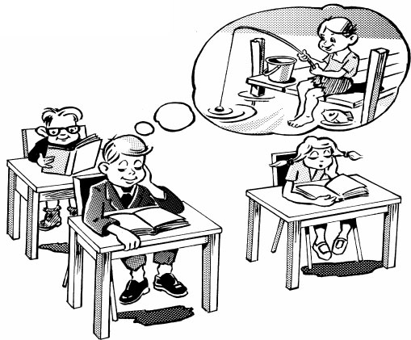
“Of his own VOLITION, Bryan would have preferred to GO FISHIN’.”
Mom was surprised when Laura ordered a veggie sandwich of her own VOLITION; she normally despises vegetables.
Dave decided to join the Army of his own VOLITION in lieu of going to college.
The dean asked Peter if he was joining a fraternity because of peer pressure or of his own VOLITION.
WANE
(wayn) v.
to decrease gradually
Link: RAIN
“Snowmen WANE in the RAIN.”
Marilyn’s interest in a new beau began to WANE when she discovered Jack had invited three other girls as his date for the junior prom.
With a WANING of air in his air tank, the diver knew he had to return to the surface.
A WANING interest by theater-goers prompted the theater to shut down.
WITHER
(WITH ur) v./adj.
to become dry; shriveled, shrunken, dried-up
Link: WEATHER
“Too much sun and too little rain makes corn WITHER in the summer WEATHER.” (v.)
The crop WITHERED from the lack of rain. (v.)
A few WITHERED apples were all that remained on the tree after the pickers had worked their way through the orchard. (adj.)
Interest in the space program WITHERED after the moon landing. (v.)
WREST
(rest) v.
to pull away, take by violence
Link: WRIST
“The policeman grabbed the thief by the WRIST and WRESTED away his gun.”
Police will tell you that in dealing with a person who threatens you with a knife or a club, it is the best policy not to attempt to WREST the weapon away from them.
When it was clear that the driver had too much to drink, the passengers WRESTED the keys away from him for their own safety.
The excited puppy WRESTED the stick from the boy’s hand.
YORE
(yohr) n.
former days, an era long past
Link: FLOOR
“In days of YORE, folks slept on the FLOOR.”
(YORE is generally to be seen in the phrase “days of YORE.”) In days of YORE, my sister and I had to walk five miles to school in waist-deep snow.
In days of YORE we didn’t have the luxuries of air-conditioning, televisions and home computers.
The ships of YORE were powered by the wind or the muscle of oarsmen.